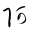
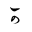
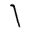
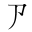
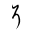
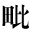
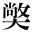
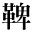
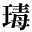

古代国語の音韻に就いて
橋本進吉
一
我が国の古典を読むについて何かその基礎になるようなことについて話してもらいたいという御依頼でございました。それで、我が国の古代の音韻についてお話申上げたいと思います。もっともこれについては、私の研究もまだ最後の処まで行き着いていないのでございまして、自分でも甚だ不満足ではございますが、しかしこれまで私が調べました範囲内でも、古典をお読みになるような場合に多少参考になるようなことは申上げることが出来ようかと思います。
古代の音韻と題しておきましたが、現今の言語研究の上に「音韻」と「音声」とを区別して使うことがございますけれども、先ずこのお話では、格別そういう厳密な区別を設けないで、ただ音韻と言っておいたので、つまり言語の音（おん）のことでございます。
言語の音は、現在の言語であれば直接我々が耳に聴いて判るものでありますが、昔の言語になりますと、昔の人が話していたのを我々は直接に耳に聴くことは出来ませぬ。今の言語であれば、直接耳に聞える音を対象として研究することが出来ますが、昔の言語でありますと、自然、言語の音を文字で写したもの、すなわち音を代表する文字に基づいて研究するより仕方がない訳であります。
全体この言語の音を研究するについて先ず第一に大切なことは、どれだけの違った音でその言語が組立てられているかということ、つまりその言語にはどれだけの違った音を用いるかということであります。我々が口で発することの出来る音は実に無数であります。随分色々の音を発することが出来る訳でありますが、言語としては、その中の幾つかの或るきまった音だけを用いその他のものは用いないというようにきまっているのであります。これは我々が外国語を学修する場合によく解るのでありますが、例えば外国語では ti tu という音は何でもなく幾らでも用います。こういう音は外国語では普通の音ですが、日本語では用いないのであります。そういう風に言語の違うによって或る音は或る国で使うけれども或る国の言語では使わないという風の違いがあるのであります。これは単に、相異なる言語、日本語と英語というような全く違った言語の間にそういう違いがあるばかりでなく、同じ言語においてもやはり時代によって違いがある。すなわち古い時代の言語と新しい時代の言語の間には、昔用いておった音が後になると用いられなくなり、また昔用いられなかった音が後になると用いられるようになるというように、色々変って来るのであります。
そういう違った音が幾つあるか、言いかえれば幾つの違った音を用いるかということが、或る一つの言語を研究する場合に一番大切な事柄であります。一般に、或る時代の言語に用いられる違った音の数はちゃんと定（き）まっているのであります。ごく粗雑な考え方でありますが、日本語を書くのに仮名四十七字、それに「ん」が加わって四十八字、それだけでもともかく日本語のあらゆる音を書くことが出来る訳で、その仮名の数というものは定まっている。もし日本語に無数の違った音があるならば、きまった数の仮名で書けるはずはないのであります。勿論（もちろん）これは、仮名が四十八字あるのでそれで違った音は四十八しかない、という訳ではありません。例えば「キ」と「ヤ」とはそれぞれ違った音ですが「キャ」という音は「キ」でもない「ヤ」でもない違った音で、これもキとヤの字で書く。キとヤとキャと三つの違った音が二つの文字によって書かれるのであります。かように、文字の使い方によって別の音も表わすことがありますから、違った文字が四十八しかないから違った音も四十八しかないというのではありません。しかしながら、それでもそう沢山の音がある訳ではなく、一定数しかないのであって、それも存外多くないのであります。日本の仮名は「キ」という音なら「キ」として一つの字で表わしますけれども、キの音を分解してみれば更にkの音とiの音とに分解できます。こんなに分解してみると、違った音の数はもっと減るのであります。かように分解してみると、東京あたりの標準的発音においては二十五ぐらいの音しかないのであります。これにくらべて英語なんかはかなり音の数が多いのでありますけれども、それにしても三十あまりでしょう。ドイツ語やフランス語でも大体そんなものです。それ位の数の、違った音があって、それを色々に組合せてその言語におけるあらゆる語が出来上っている訳で、つまりそういう言語を用いている人は、それだけの音を聞き分けまた使い分けているのであります。
それでその言語においてどれだけの違った音を用いるかということは、言語として非常に大切なことであります。というのは、そういう音の違いというものは言葉の意味に関係して来るからであります。例えば「石（イシ）」という語と「椅子（イス）」という語は、我々はこれを聴いて確かに別の語だということがはっきり判る。すなわち「シ」の音と「ス」の音とを我々が耳に聴き分けるからであります。「イル」と「エル」とも、我々はこれを聞いて別の語だとわかるのですが、「イル」と「エル」との間において「イ」の音と「エ」の音とが違っているために「イル」という語と「エル」という語は同じではないということが解るのです。「マド」と「マト」、「ヌク」と「ヌグ」も、トとド、クとグを聴き分けて、これは違った語だと知るのであります。かように音の違いが語の違いの標識になる。語が違うのはつまり意味が違うのですから、音の違いは意味を識別する標（しるし）になる。それで音の区別は大切な訳であります。
右に挙げたような、シとス、イとエ、トとド、クとグなどの音を互いに違った音として区別するのは、我々には常のことですから、我々は当然別の音だと考えております。これを区別しないものがあろうなどとは考えないのであります。それでは、これらの音は音の性質上いつでも別の音であるかというと必ずしもそうではないのであって、或る国に往（ゆ）けば「マド」も「マト」も音として区別しないという所もあるのです。我々は「サシスセソ」と「シャシシュシェショ」を別の音と聴きますけれども、アイヌ人などになると、言語の音として同じ音だと思っているのであります。この語は「シャ」というか「サ」と言うかと尋ねると、どちらも同じではないかと言う。すなわちアイヌ人には言葉としては「シャ」でも「サ」でも同じことで、それを同じ音として考える。そういうことがあるのでありますから、言語の音を区別して別の音とするのは、音自身のもっている性質というよりは、その音を聴き、あるいは使う人の心の中での心理的のはたらきであります。それは言語の違うに従って違っております。我々は「サケ」と「シャケ」が間違ったら飛んでもない間違いを起しますが、アイヌ人は「サケ」も「シャケ」も音としては同じことなんです。それであるから、やはり言語によってそれぞれどういう音を同じ音とし、どういう音を違った音として聴くかというきまりがあるのであります。それで或る言語においてどれだけの音を違った音として区別するかということが大切な問題となるのであります。それは今言った通り言語の意味に関係して来る。違った語であるということは主として音によって識別し、音が違っているから違った語であるという風に考えるのが常であるからであります。
そういう訳ですから、古典を研究し古典の意味を解釈するという場合においても、昔の人がどれだけの音を聴き分け、言い分けておったかということを知るのが大切であります。
現在の言語においては、その音の違いということは音そのものを聴いてそれで判ります。その言語を使っている人ならば、この音とこの音は同じである。例えば口を大きくして言う「ア」の音、口を余り開かないで言う「ア」の音、そういう音は日本人の耳にはどちらも同じ音と聞くのです。普通日本人は皆そうだろうと思いますが、英国人などはそれを違った音として区別して聴くのであります。marketとmatchとmuchのmar- ma- mu-の部分は英国人はそれぞれ別の音として聞き、これを違えれば意味も違って来ますが、日本人は同じ「マ」の音として聴くのであります。かような音の異同はそれを使っている人について聞いてみれば解る訳で、さようにして調べれば、その言語ではどれだけの音を違った音として聴き分けるかということがわかるはずです。その音の数は同じ言語でも時代によりまた土地によって違うもので、同じ日本語でも一口には言えない。例えば「エ」と「イ」の区別は日本でも処によっては判らず、「イシ」だか「エシ」だか区別が付かない処がある。であるからそれぞれの土地の言語について別々に考えてみなければならぬのでありますが、或る一地方の言語においては、その言語に用いる違った音の数というものはきまっている。その一定数の違った音を色々に組合せてその言語は出来上っているのであります。つまりそれらの音を色々に組合せて一々の語の形が出来、そうして色々の違った意味を違った音の形によって言い分ける、すなわち、区別して示すのである。その一定の言語において用いられる違った音の数というものは、こういう音とこういう音とこういう音という風にちゃんときまっているのであります。日本語ならば母音はアイウエオの五つですが、英語になると母音はなかなか沢山あります。「イ」でも舌に力を入れてしっかり発する「イ」と、少し力を抜いて言う「イ」とを別の音として聴き分け言い分けている。「エ」でも日本の「エ」よりももっと舌に力を入れて言う「エ」と、舌を下げて上顎（うわあご）との間を広くして言う「エ」とを区別するという風に、色々沢山違った母音を用いる。それで或る一定の言語ではこういう音とこういう音とこういう音とを用いるという風に、これに用いる音の数がちゃんときまっている。そうして、それだけの音は、一つ一つは互いに違った音であるけれども、決して互いに孤立して存在しているものではなく、全体がしっかりと組合っているのであります。それ故、或る語を発音する場合には、その組合っている多くの音の中のどれかを取り出して、一つずつ順次に発音するのであります。また、人の言語を聞く場合にも、耳に聞えて来る音を、その組合せの中のどれかであるとして聴き取るのであります。先程言ったように英語ではmarket,match,muchという場合に、mar-とma-とmu-とは別々の音であって、英国人は、これを違った音として聴くのですが、日本人はこれを一つの音として聴くのであります。それは聴く人の頭の中にこの音とこの音という風にちゃんとその音の観念が出来ていて、それが互いに組合って存在し、それ以外のものを排除しているからであります。
それで、我々が言語を発する時にはその中のどれかを使うので、それ以外の音は用いない。聴く場合もその中の一つとして聴く。それであるから外国から言葉が入って来る場合に、聞く人の言語のもっている音に合わないような音があると、その音を変えて、聞く人の言語にある諸音の中のどれかに合うようにするのであります。例えばチベットという国の名はTibetでありますが、「ティ」（ti）という音は日本語にないので、どの音にも旨（うま）く嵌（はま）らない。それでその語を我々が使う場合には、日本語の中にあるそれに似た音にかえて、チベット［＃チに傍線］とするのであります。日本語にないような音は押し出してしまって、日本語にあるような音として使う。また我々の使っているメリヤスという語、これも古いスペインの語でありましてmediasという語ですが「ディ」という音が日本にないから、それを日本にあるそれに似た音にして、メリヤス［＃リに傍線］としたのであります。「ディ」は聴いた感じが「リ」と似ておりますから、メリヤスとしたのであります。こういう風に日本語にない音が入って来ても、これまで我々がもっている色々違った音の組合せの中のどれかにしてしまうのであります、そういう風に、あるきまった言語において用いるあらゆる音の組合せを音韻組織といっております。
これはちょうどオルガンとかピアノのキーのようなもので、一つの言語にはちゃんときまった数のキーがあるようなものです。音を発しようとすれば、その中のどれかを叩（たた）くより仕方がない。それ以外の音は出ない。半音ずつの違いによって一箇ずつキーが附いておりますが、それのどれかを使うより仕方がない。それ以外の音は出ない。一つのピアノとかオルガンとかに備え付けられているキーは限られている。これと同じように一つの言語に用いる違った音は一定数のものがちゃんと作りつけになっているような訳です。しかしピアノであったならば、それはかえることは出来ませぬ。いつまでも同じ数だけなのですが、言語においては或る一時代の言語にあったそういう音韻組織は、時の移ると共に段々変って行くことがあります。幾つかきまった数だけ使われておったその音自身が段々変って行く。或る場合には一つの音が二つに分れ、或る場合には二つの音が同じ一つの音になる。そうすると前の時代とは全体の組合せが多少違って来るということは無論ある訳であります。
現代語については、今申した通り、どれだけ違った音を区別するかということは自身が直接にその言語を聴き、また現在その言語を使っている人々に尋ねてみて判るのであります。ところが古代の言語については、昔の人がどれだけの違った音を聴き分け言い分けておったかということは、昔の人の文字に書いたものによって知るほか方法がないのであります。文字に書いたものと言っても色々あります。例えば、漢字の意味を取って日本語を書いて、例えば「ヤマ」という語を「山」の字で書く。これは「サン」という漢字であって、支那において既に「ヤマ」という意味を表わしている。それを日本語の「ヤマ」という語の意味がちょうど支那の「山」という字の意味に当るものでありますから、「山」の字を書いて「ヤマ」という日本語を表わさしめるのです。このような表わし方もあります。しかしこういう風に日本語を書いたものでは、今言ったような、昔の人がどれだけの音を聴き分けたかということは判りません。これを知るには、どうしても日本語の音を書いたもの、「ヤマ」という語ならば「也麻」と書くとか、仮名で「やま」と書くとか、こういう風に音を写したものによるよりほかないのであります。すなわち片仮名、平仮名、あるいはもっと古い時代では万葉仮名、そういうものによって日本語を書き写したもの、それを材料にして、それによって昔の人がどれだけの音を言い分け聴き分けておったかということを知るのであります。
ところが、そういう日本語の音を文字で写した場合に、もし同じ音はいつでも同じ文字で書くというのであるならば、問題は余程簡単になります。いつでも「ヤ」という音は「や」という字で書き、これ以外の字では書かないのならば、音の区別というものと文字の違いというものと、ぴたっと一致している訳でありますから、違った文字が幾つあるかということを見れば、違った音が幾つあるかということははっきり判るはずであります。ところが実際はそう簡単には行きません。これは現代の言語について考えてみてもよく解ることですが、我々はちょっと考えると、仮名で日本語を書いた場合には大抵同じ音はいつも同じ文字で写されているという風に考えている。ところが例えば「やま」なら「やま」という字、これは片仮名と平仮名とがありまして「ヤマ」とも書けば「やま」とも書く。この片仮名と平仮名とでも同じでないとも言える。しかしこのことはしばらく別にして、平仮名の場合について考えてみても、現代において変体仮名を使いますから、同じ音をいつも同じ文字では書かず色々違った書き方をしております。「ア」の音でも「あ」とも「※1」とも書く。これは現代の言語ですから、どちらでも音としては同じ音だということが解っておりますが、形から見ると「あ」と「※1」は何ら関係のない形であります。「カ」でも「か」もあれば「※2」もあり「※3」という字もあって、同じ音でありながら、しかも形が皆違っております。字としては違った字であります。こういうものは幾らもあります。これは、我々が今使っている言語でありますから、同じ語であり同じ音であるということが、はっきり判るのでありますが、しかし昔の人の書いたものについて昔の音を研究してみようという場合には現代において我々がそれを同じ音で読むということは、余り大した根拠にはならない。昔の人がどんな風に発音しておったかということが判らなければ駄目であります。しかし昔の人がどんな発音をしておったかということは、我々は直接に知ることは出来ないのであります。その場合にこの「あ」、「※1」、「か」、「※2」、「※3」などの字をたよりにして、それが同じ音であったか、違った音であったかということを考えるより仕方がない。字をたよりにする場合には、これらの違った文字は、まず別のものとして取り扱わなければならぬ。それを同じ音に発音したか違った音に発音したかということは、我々は予（あらかじ）め決めることは出来ないのであります。
それで、現代においては平仮名において変体仮名というものがあって、同じ音をあらわすのに色々違った形の文字があります。片仮名には今では変体仮名はありませぬが、それでは片仮名にはそんなものは全然ないかというと決してそうではないので、今はありませぬが古い時代には幾らかあって、「キ」に対して「※4」という形があって、「キ」と同じ所に用いてあります。「ミ」に対して、「※5」という形「ア」の字に間違えられやすいものがある。「ワ」に対して「禾」という形がある。「ノ」に対して「※6」という形がある。「ホ」に対して「※7」、こんな形がよく用いられております。それであるから片仮名でもやはり昔の言語の音を知ろうという場合には、字の違いがすなわち音の違いと考えることは出来ないのであって、これとこれとが同じ音であるということは予めきめる訳には行かないのであります。
その他、今日の普通の書き方によれば「キヤウ」と書いても「キヨウ」と書いても「ケウ」と書いても「ケフ」と書いても「キョー」であります。これは実際に今日の言語においては同じ音でありますが、字の形は皆違っております。字の形をたよりにしてみればこれは皆違った形であるから違った音かと思われます。ところが実際においては皆同じ発音をしている。そうかと思うと「孔子」も仮名では「こうし」と書きますし、「犢」も「こうし」と書きます。これは眼に見える形は同じであっても発音は違っている。そういうことが昔になかったとも言えない。「おる」「をる」「とほる」「あふひ」の「お」「を」「ほ」「ふ」は、今日では皆同じオの音であります。これは発音は同じで字が違っている。字の方を土台にして考えてみると違ったように見えながら、実際はその発音は同じであります。こういうことが我々の眼の前にあるのでありますから、昔においてもこういうことがありはしなかったか。字に書いたものを土台にして調べるという場合には、すぐこんな問題に打突（ぶつ）かるのであります。
古い時代の古典は、国語の音は万葉仮名で書いてあります。万葉仮名はどうかと言いますと、平仮名や片仮名どころの騒ぎではないので、同じ音に対して非常に沢山の違った文字が使ってある。例えば今日我々が「ア」と読んでいる中にでも「阿」「婀」「鞅」「安」のような色々の文字があって、これらの文字を悉（ことごと）く我々は「ア」と読んでいる。「ア」と読んでいるというのは、我々が「ア」だと考え、皆同じ音だと考えてそう読んでいるのであります。「テ」にしても「弖」「帝」「底」「諦」「題」「堤」「提」「天」こんな色々な字が書いてある。これを我々今日「テ」と読んでいる。字としてみれば皆違った字で、しかも非常に沢山違った文字が使ってある。字が違っているということから言えば「阿」と「婀」と「鞅」と「安」の違いも、これらと「弖」「帝」「底」などとの違いも同じ違いであって、その間に区別はない。それだのに我々は、「阿」「婀」「鞅」「安」等を皆アと読んで同じ音の字とし、「弖」「帝」「底」等を皆テとよんで同じ音であるとし、そして「阿」……の類と「弖」……の類とは互いに違った音の文字だとしているのであるが、それは我々がそういう風に区別しているだけで、昔の人も我々と同じくこれらの文字を「ア」という音「テ」という音に読んだか、また我々が同じ音に読む多くの文字の中、昔は或るものは或る一つの音によみ、或るものは他の違った音によんだことはなかろうかというようなことは、研究してみなければ解らないのであります。我々がそう読むから昔でもそうだったと考えるのは、独断というよりほかありません。
そうして見ると、古い時代の言語の音のことを考えてみるには、言語の音を写した万葉仮名（仮名や片仮名でもよろしい）によらなければならないのでありますが、仮名として用いられた文字は非常に沢山あります。万葉仮名はすべてで恐らく千以上もあるだろうと思います。それは皆一々違った音をあらわしたとは思われませんが、とにかく文字は皆違っているのですから、その中のどれだけが同じ音で、どれだけが互いに違った音であるか、そういうようなことは予め決める訳には行かない。よく研究してみなければならないのであります。
現代においてもいわゆる変体仮名というものがあって、同じ音を色々違った文字で書くことがあります。けれども現代においては変体仮名というものは、正体（せいたい）の仮名に対するもので、「か」ならば「か」は正しい形として「※2」とか「※3」とかいうもの、まだ幾らもありますが、こういうものを「か」のかわった形と認め、結局「か」の代用と考えているのであります。その正体の仮名は全体幾つあるかというと、これは普通ならば「いろは」の四十七、その他に「ん」が別に加わっておりますが、まず四十七であります。これを代表するものは「いろは」であります。今はよく五十音が使われますけれども、五十音の中には仮名として同じ形をしているものが三つあって、ア行の「い」とヤ行の「い」、ア行の「う」とワ行の「う」、ア行の「え」とヤ行の「え」は字としては区別がないのですから、仮名として見れば五十音の中から三つ引いた四十七、つまり「いろは」と同じ訳です。その他に「ん」があります。ですから現代においては「いろは」四十七と「ん」、これが現代における違った音を代表する仮名であるというように考えることが出来ます。
しかし、それではそれで現代の違った音をすべて代表しているかというとそうではありませぬ。その他に濁点があります。これが十八ばかり。それから促（つま）った音、それは「つ」という字を書くのでありますけれども、この仮名は普通の「つ」の音に読む場合と、「有つた［＃「つ」に傍線］」という風に促った音と、二つの用をなしている。音としては二種のものを表わす訳であります。それから拗音、「きや」と書いて「キャ」と読む。これも仮名を二つ合せて書いた別の音であります。それからまた長音があります。これらの音は「いろは」四十七文字では代表せられていないのであります。それだから「いろは」四十七では足りないといわなければなりませぬ。足りないではありますけれども、しかし「いろは」四十七文字が大体において現代の音の区別を或る程度まで代表していると言うことが出来ます。
けれどもその「いろは」四十七文字の中には、実際の音としては同じものがある。仮名としては違っているけれども発音としては同じである。すなわち「い」と「ゐ」、「を」と「お」、「え」と「ゑ」。これは現代の日本語では同じ発音であります。仮名遣（かなづかい）の上では区別しますけれども、実際の発音としては同じである。そうすると四十七字は実際の音としては四十四音しか表わさないということになります。それで五十音図は、前に言った通り仮名として区別のないものが三つ、仮名として区別があっても今言ったように発音としては同じものが三つあって、六つだけ余計ある訳である。そうですから、五十音の中から六つ引いた四十四だけが音として現在我々が言い分け聴き分けているものであります。それ以上は音として区別していません。
ところが、こういう風に発音が同じでありながらも仮名としては違っているのでありますから、仮名としては使い分けなければならない。それならば、どういう場合に「い」を使い、どういう場合に「ゐ」を使うかということが問題になる。音で聴いたところでは判らない。犬の「イ」という音をどれほど考えてみても、「い」と「ゐ」とどちらを使うのだということは判らない。発音としては同じでありますけれども、仮名としては違っているとすれば、どちらを使ってもよいという訳には行かない。いずれかを使わなければならぬ。そこで仮名遣という問題が起る。犬の「イ」ならば「い」を書く。居るの「イ」の音は「ゐ」を書く。同じ「イ」でもその言葉によってどちらを使うかということをきめたのが今の仮名遣であります。
さてこういう仮名遣の問題を純粋な学問的な方法で解決したのが契沖阿闍梨（けいちゅうあじゃり）であります。我々は「い」と「ゐ」を同じように読んでおります。ただ、音の上で考えたのでは、どちらを使うかということは判らないのであります。ところが契沖阿闍梨は古典を調べ、古い時代の仮名の用法を調べまして、古い時代には語によっていずれの仮名を用いるかということがちゃんと決まっていて混乱しない。「入る」の「イ」はいつでも「い」を用いて「ゐ」を用いない。「居る」という意味の「イル」ならば必ず「ゐ」を用いて「い」を用いない。そういうことを発見したのであります。調査した材料は非常に古い時代のものであって、主として国語を万葉仮名で書いたものによって調べたのであります。そうしてどういう風に調べたかというと、同じ語をどういう万葉仮名で書いてあるか、同じ語が色々の場合に用いられているのにどういう万葉仮名で書いてあるかということを調べたのであります。
例えば「大蛇」というような場合に『古事記』では「遠呂智」と書いてあり『和名抄（わみょうしょう）』では「乎呂知」と書いてある。「惜」は『万葉集』に「嗚思」、「遠志」、「怨之」、「乎之」、こう書いてある。それから「己（オノ）」は「意能」、「於能」、「意乃」。それから機（はた）を織る意味の「織」は「於瑠」、「淤呂須」というのは織るということを敬語にしたのであります。それから「弟」は「乙登」、「淤登」、「於止」。そういう同じ語を仮名で書いたのを集めてみると、「遠」と「乎」は同じ語の同じ部分に宛ててあるのでありまして、どちらを用いてもよい。すなわち用法から言えば通用するのであります。また「嗚」と「遠」と「怨」と「乎」も同様で、同じ処に使ってあって、通用する。結局、「大蛇」のオも「惜し」のオも同じもので、これを「遠」「乎」「嗚」「怨」というような文字で書いてよく、これらの文字は相通じて用いることが出来るものである。それから「意」「於」「淤」「乙」は同じ語の同じ部分を書いてあるからこれもどれを使ってもよく、互いに通用するのであるということがわかる。こういうものを沢山集めて、それがどういう文字で書いてあるかということを同じ語の幾度も出て来るものについて調べてみると、どの字とどの字が同じ場合に用いられるかが明らかになる。そうして「大蛇」「惜し」の「を」には、いろいろの文字が用いられるが、その文字と「己」「織る」「弟」の「お」に用いられる色々の文字との間には区別があって、「己（オノ）」の「オ」に「嗚」とか「遠」とか「怨」とか「乎」とかを使った例はない。「織る」「弟」の「オ」にも、「嗚」「遠」「怨」「乎」を用いた例はない。また、「大蛇」「惜」の「ヲ」に「意」「於」「淤」「乙」などを使った例はない。かように、オに当る文字と、ヲに当る文字との間には区別があって、互いに通じて用いることがないということを契沖阿闍梨が発見したのであります。すなわち、
を――遠、乎、嗚、怨
お――意、於、淤、乙
それで、契沖は古い時代においては仮名が一定していると言っているが、この一定しているということは、或る一つの文字以外のものは決して使わないということではない。そういう意味において一定しているのではなく、文字は一定はしていないが、一つ一つの語について見ると「を」の仮名にあたる文字を用いる語は、「お」の仮名にあたる文字は使わない。「お」の仮名にあたる文字を使う語は「を」の仮名に当る文字は使わない。それが一定しているという意味であります。仮名で言えば一方は「を」に当り一方は「お」に当る。この「を」に属する万葉仮名と「お」に属する万葉仮名との区別がはっきりしている。こういうことを、こういう方法によって、古代の書物における仮名で書いたものから発見したのです。後になると「を」類と「お」類の両方を混同して「を」類で書くべきところを「お」類で書き、「お」類で書くべきところを「を」類で書くというような間違いが出来て混乱して来た。が古い時代においては、すなわち平安朝半（なかば）以前においては、こういう区別が儼然（げんぜん）として存している。そのどちらを使うかは語によってちゃんときまっている。「己（オノ）」の方は「お」類の万葉仮名を使い、「惜（ヲシ）」の方は「を」類の万葉仮名を使うという風に、語によってはっきりきまっているということを契沖が見つけたのであります。
契沖が研究しましたのは先ほど挙げたような「いろは」の中の、同じ発音で違った仮名、「い」と「ゐ」、「え」と「ゑ」、「を」と「お」、こういう区別、それからそのほかに、語の中、または下にある「はひふへほ」、すなわち「かは」と書いて「カワ」と発音し、「たひ」と書いて「タイ」と発音するような、語の中および終にある「はひふへほ」の仮名、その他色々ありますが、そういうようなものについて、今言ったような方法で、仮名の区別が儼然としてあったということを見付けたのであります。契沖は、現代においてもそれを標準にして語を書くべきである、昔の人は「己」の「オ」は「お」で書いているから我々も「お」と書くのが正しい、「惜し」の「オ」は「を」類の仮名で書いているから我々も「を」で書くのが正しいと主張しました。その主張は、主張としてはそれに対して異説を唱えることも出来ましょうけれども、契沖の見出した古代の事実、すなわち古代の文献においては発音が同じで区別し難い仮名が立派に使い分けてあるという事実は、何人（なんぴと）といえども疑うことは出来ないものであります。そういう点において契沖の研究が貴いものであるということが出来ようと思います。
そうしてこういう風の区別があるとすれば、昔の文献を研究する場合に「お」類の仮名と「を」類の仮名と混同してはいけない。もし「意能」と書いてあれば「己」の意味である。必ずいつでも「己」であるという訳には行きませぬが、尠（すくな）くも一方「遠能」と書いてあるものとは同じ語ではないということは言える。「意」は「お」類であり、「遠」は「を」類でありますから、同じ語でないということは、はっきり言うことが出来ます。そうすると古典を研究する場合には大変必要なことであります。
かようにして、契沖の研究によって「いろは」四十七文字の中で、発音は同じであっても別の文字となっているものは、古代においても、これにあたる万葉仮名を使いわけて互いに混同することがないということが見付かったのであります。それでは、どうしてかような仮名を区別して用いたかということについては契沖はどう考えていたかは余りはっきりしていません。私どもは、契沖は、昔の人が一度定（き）めてそういう風に書いたのを後の人がずっと守って来たけれども、余り後の世になるとその定（きま）りを守り切れないで混同したのだと考えていたのであるらしく思うのであります。しかしそれについて述べると時間を取りますから今は略しますが、つまり契沖は発音の区別によるものだということは考えなかったらしく思います。しかしそれはともかくとして、その後の学者になるとこれは明らかに発音の区別によるものである、今は同じであるが昔は発音が違っておったのであると考えるようになりました。実際発音が違っているならばそれを書き違えることはないはずであります。我々は「か」と「き」とを書き違えることはない。発音が違っているから我々は聴き分けることが出来るからであります。それと同じように「い」と「ゐ」、「お」と「を」は発音が違っておったとすれば、これを違った仮名で書き、決して混同することがなかったのは当り前のことであります。そのことは賀茂真淵（かものまぶち）の弟子の加藤美樹（かとううまき）の説として『古言梯（こげんてい）』の初めに出ております。また本居宣長（もとおりのりなが）翁（おう）もやはり『古事記伝』の初めの総論に「仮字（かな）の事」という条に、明らかに音の区別であったといっているのであります。それから富士谷成章（ふじたになりあきら）もやはりそう考えておったのでありまして、本居宣長の時代になりますと、古代には、後に至って失われた発音の区別があったのであって、仮名の使い分けはこの発音の区別によるものであるということが、立派に判って来たのであります。そうして本居宣長翁は、その実際の音を推定して「を」は「ウォ」（ローマ字で書けばwo）であり、「お」は純粋の母音の「オ」（すなわちo）であると言っておられます。これは正しい考えだと思います。ワ行の「ゐ」「ゑ」「を」は、「ウィ」「ウェ」「ウォ」（wi、we、wo）であったと考えられるのであり、それに対して、ア行の「い」「え」「お」は、イ、エ、オ（単純な母音）であったのです。
かように、契沖阿闍梨の研究によって、「いろは」は四十七文字がすべて悉（ことごと）く違った音を代表していたということが解って来ました。前に言った通り、四十七文字の中、同じ音であるのが三つありました。それは今でこそ同じ音であるけれども、ずっと古い時代において違った音であったとすれば、仮名の違いがやはり音の違いを表わしておったものである。四十七の仮名は四十七の違った音を表わしておったものであるということが解って来たのであります。
ところが五十音図によると、五十だけの違った音があり得べきはずであります。四十七まで区別があって、あと三つだけは同じ音であるのは不審である。これも、あるいは昔は何か違った音ではなかったかということが問題になります。それは、
［＃ここから二字下げて表］
ア行 い う え
ヤ行 い ― え
ワ行 ― う ―
［＃表終わり］
かように、「い」「う」「え」の三つが重複している。五十音図では別々になっているが、仮名は同じことであります。仮名では書きわけられないが、五十音図で別々になっているということは、音として違ったものだということを示すものであります。それ故、それは、いつか古い時代にあった二つの違った音が、後に区別を失って一つになったのではないかという疑問が起るのであります。ところが「いろは歌」に仮名が四十七あって、それが一々別の音であったということが判ったのですが、平安朝のかなり古い時に「いろは歌」が行われる前に「いろは」のように用いられておった詞（ことば）があるのであります。それは「天地（あめつち）の詞（ことば）」であります。これが「いろは」が出来る前に「いろは」のような役をしておったものと考えられます。これはいつ頃からあったか判りませぬけれども、村上（むらかみ）天皇の頃には既に世間に行われておったということは明らかな証拠があります。その全文は次の通りです。
［＃ここから「天地の詞」、二字下げ］あめつちほしそらやまかはみねたにくもきりむろこけひといぬうへすゑゆわさるおふせよえのえをなれゐて［＃二字下げここまで］
右のように、単語を集めたようなものでありますが、それがあらゆる違った音の仮名を取って並べたものと考えられるのでありますが、ただ不思議なことには、それが四十八字ありまして、「いろは」四十七文字よりは一つ多いのであります。何が多いかというと「えのえを」となっておって「え」が二つあります。このことも一つの問題を提供するものであります。「いろは」の場合には「やまこえて」の「え」と、「ゑひもせず」の「ゑ」と、我々が「エ」と発音するものが二つに分れている。「え」と「ゑ」は別の仮名だということは判りますけれども、「天地」には同じ「え」の仮名がもう一つあって「え」が二つある。それが五十音図によると、ア行の「え」とヤ行の「え」とあって、やはり同じ「え」が二つに分れている。それが一つの問題になったのであります。かように、五十音図に、発音ばかりでなく仮名も全く同じ「い」「う」「え」の三つがそれぞれ二箇所に分れて出ている。また「天地の詞」によると同じ「え」が二つ出ている。これらは何か発音の違いに基づくものではないかということが問題になったのであります。これについて調べたのが奥村栄実（おくむらてるざね）という人で、加州藩の家老の出であります。この人が『古言衣延弁（こげんええべん）』を作りました。これは文政十二年の序文でありますからその時に出来た書物であります。これも契沖と同じような方法でもって調べたのでありまして、古い書物に出て来る「イ」にあたる万葉仮名と、「エ」に当る仮名と「ウ」に当る仮名との実例を集めて、そうして同じ語において「イ」に当るものはどんな字を用いているか、そうしてどういう字とどういう字は通用するかということを調べたのであります。その結果として次のようなことが判りました。
イウエの三つの中で「イ」と「ウ」とは全部通用する。すなわち、イにあたる種々の万葉仮名は、その中に区別がなく、どんな場合にも同様に用いられる。ウにあたる仮名も同様で、その中に区別がない。しかるに、エにあたる種々の仮名は二類に分れ、同類のものは相通じて用いるが、異類のものは互いに通じて用いない。こういうことを発見したのであります。このエの二類の別は後世の普通の仮名では書き分けないのでありますが、万葉仮名では区別があります。すなわち次の通りです。
［＃ここから二字下げて表］
甲の類 衣、依、愛、哀、埃、英、娃、翳、榎、荏（これは「榎（エ）」「蝦夷（エゾ）」「得（エ）」等の語に用いられる）
乙の類 延、要、曳、叡、江、吉、枝、兄、柄（これは「枝（エ）」「兄（エ）」「江（エ）」「笛（フエ）」「※（ヌエ）」「吉野（エシヌ）」「消（キエ）」「絶（タエ）」「越（コエ）」等に用いられる）
こういう仮名は、甲の類も乙の類もすべて我々が「エ」と読んでいる仮名であります。のみならず仮名を附ける場合にも「エ」という仮名を附けるのであって、ワ行の「ヱ」ではないのであります。その中にこういう区別があるのであります。前に挙げたように、甲の類は榎の木の「エ」、蝦夷の「エ」、物を得るの「エ」であり、乙の類は、枝の「エ」、中大兄の「エ」、笛の「エ」、吉野の「エ」、その他にも沢山ありますが、榎の木の「エ」は甲の類の「エ」で、甲の類の字を使って、乙の類の字を使ったものはない。甲の類ならどの字を使ってもよい。また、枝の「エ」は乙の類の字を用いる。乙の類ならどの字でもよいが、甲の類の字は使わない。万葉仮名も甲の類と乙の類とは決して通用しない。これを用いる語も、甲類を用いるものと乙類を用いるものと、はっきり分れている。こういう語には甲の類を使い、こういう語には乙の類を使うという風にちゃんと分れている。こういうことが判ったのであります。そうして、この二つのエの区別は、五十音にあるのであって、すなわちア行の「エ」とヤ行の「エ」にあたるのであります。ア行の「エ」は純粋の母音であり、ヤ行の「エ」は初にヤ行子音の加わったもの、すなわち「イェ」である。こういう区別であるというのであります。これは、活用の上においても、「得（エ）」のような甲の類に属するものは「う」「うる」とア行に活用し「消え」「絶え」「越え」のような乙の類のものは「消ゆ」「絶ゆ」「越ゆ」とヤ行に活用します。甲の類はア行であり乙の類はヤ行であります。こういう風に区別されておったものであるということが奥村栄実の研究によって判ったのであります。ところが、この研究はその後余り学界の注意を引いていなかったのであります。けれども、明治以後になって大矢透（おおやとおる）氏がこれを新たに調べ直してその説が正しいということを証明し、そうして、もう少し材料を補って『古言衣延弁証補』というものを書かれたのであります。ごく少数の、例外と見られるものがありますけれども、これは何か他の説明が出来るものと思います。恐らくこの結果は疑いのないものと思います。古代においてはア行の「エ」とヤ行の「エ」の区別があったということは、この研究によっても確かめられたと考えてよいと思います。
二
前回述べましたのは、古代においてもまた現代の我々も、それぞれ違った仮名として認めている「いろは」四十七文字は、その他に色々の仮名があっても、それはいわゆる変体仮名であって、どれを使っても四十七字の中のどれかと同じものであるが、しかし四十七字のおのおのは互いに別なものであって、他のものをもって代用することは出来ないのである、すなわち、変体仮名は互いに通用するものであり、四十七種は互いに通用しないものであるというように我々は考えている。ところが実際において、我々がこの四十七の中で同じように発音しているものが三つある。この三つは仮名遣（かなづかい）の上では区別しているけれども、実際の発音から見ると同じであって区別することは出来ない。ところが、そういうものも古い時代の文字の用法を見るとやはり区別してある。ア行の「イ」とワ行の「ヰ」という風に、我々の耳に聴いては判らないが、昔の人の書いたものにはちゃんと明瞭に書き分けてあるということが、契沖阿闍梨（けいちゅうあじゃり）の研究によって明らかになった。それから「いろは」と相並んでやはり音の区別を表にしたいわゆる五十音図がありますが、これと「いろは」とを比べてみると三つだけ多くなっていて、仮名では同じに書く三つの仮名が、それぞれ二つにわかれて違った所に入っている。すなわちア行の「イ」とヤ行の「イ」と、ア行の「エ」とヤ行の「エ」と、ア行の「ウ」とワ行の「ウ」と、この三つは仮名の形は同じでありながら二箇所に分れて出ている。それで「いろは」に比べると三つだけ多くなって五十になっている。これらの仮名は、我々は仮名としては別なものとしては考えていないのでありますが、しかしそういうものも、ずっと古い時代においては何か区別せられていはしないかということを問題にして、古い時代における仮名、すなわち万葉仮名の用例をあつめて、「イ」（ワ行の「ヰ」でなく）に当るあらゆる万葉仮名がどういう語に用いられているかということを調べてみると、それらはいずれも区別なく同じように用いられていることがわかり、それから「ウ」も「ウ」に当るべき万葉仮名を用いてある語をずっと調べてみると、これらの仮名はどういう語においても皆同じように用いられて、区別がないことがわかったが、ただ「エ」に当る万葉仮名だけは二類にわかれて互いに区別せられているのであって、ア行の「エ」とヤ行の「エ」と違った文字が用いてあり、語によってどちらの類の仮名を使うということがちゃんと定（き）まっているということが発見されたのであります。それが奥村栄実（おくむらてるざね）の『古言衣延弁（こげんええべん）』の研究であります。そうして、契沖の研究によって仮名の用法上区別があることが明らかになった「い」「え」「お」と「ゐ」「ゑ」「を」との別は、実際の発音上にあったア行音とワ行音の区別であって、「イ」「エ」「オ」音と「ウィ」「ウェ」「ウォ」音との別を表わすものであるということが本居宣長（もとおりのりなが）翁（おう）の時代に明らかになり、そうしてもう一つのエにあたる仮名の二類の区別も、ア行音とヤ行音との区別で、一方は母音のエであり一方は「イェ」音を表わすものであるということが明らかになったのであります。
契沖阿闍梨や奥村栄実の研究によって右のようなことが判って来たのであります。その結果として、第一に、古代には現代にない「ウィ」「ウェ」「ウォ」および「イェ」というような音があったことが明らかになったのであります。第二に、古代の音を表わすには、普通の平仮名では不十分で、古代には、平仮名や片仮名では区別しきれない音の区別があったことが明らかになったのであります。
ア行とワ行の「え」と「ゑ」、「い」と「ゐ」、「お」と「を」、これらは、古代には発音上区別があったのが今は同音になって、音の上では区別はないが、仮名では別のものとして区別せられている。ところがア行の「え」とヤ行の「え」の区別は、昔あった発音上の区別が失われたのみでなく、仮名としても区別なく、それを仮名で書きわけることも出来ないものである。昔のア行のエの音も、ヤ行のエの音も、同じように「え」の仮名で書いて、我々はそんな区別があろうとも考えない。その「え」が、古い時代においては立派に二つに分れて、互いに混ずることがなかったということが判ったのであります。
この「え」の二種の別は、五十音図におけるア行のエとヤ行のエとの別に相当するものですが、それでは、五十音図において区別せられているようなあらゆる音の区別が皆古い時代にあったかというと、そうでもない、前に述べたように、ア行の「い」とヤ行の「い」およびア行の「う」とワ行の「う」の区別は昔もなかったのであります。昔の国学者には五十音図というものは非常に古いものであって、神代からあったものであるというようなことを考えておった人もあります。しかし五十の音を言い分けるということは、神代はどうだか知りませぬけれども、我々が普通溯ることが出来る時代――これはまあ実際においては大体推古（すいこ）天皇までぐらいであろうと思います。それより以前は、その辺からずっと眺め渡すことが出来るかも知れませぬけれども、直接に知るということはむずかしいのであります――先ず推古天皇の頃まで溯っても、五十の音がことごとく別々に使われ言い分けられておったということはなかったと思うのであります。そうかといって「いろは」では少し足りない。すなわち「いろは」ならば四十七の区別でありますが、ア行の「え」と、ヤ行の「え」は区別があるのでありますから「天地（あめつち）の詞（ことば）」の四十八音ならばよいのであります。そういうような訳で、結局この伊呂波歌とか、あるいは天地の詞というものは、昔の人が区別して仮名を使っておった、その仮名の区別を代表するものでありますけれども、五十音図はすぐにはそれを代表しないものであるということが判るのであります。このア行の「エ」とヤ行の「エ」は後世の片仮名や平仮名では区別せられず、そんな仮名によっては判らなかったのを、その区別があることを見出した。これを見出したのはどうして見出したかというと、古い時代の万葉仮名について、「え」に当る色々の万葉仮名の一つ一つについて、この字はどういう場合に用いられているか、どういう語に用いられるかというようにして調べて行く。そうすると、或る語の「え」に用いる万葉仮名は他の或る語の「え」には用いないということがわかり、「え」にあたるあらゆる万葉仮名が二つの類にわかれて、おのおの、その用いる語を異にするということを見出すことが出来たからであります。万葉仮名は全体としては非常に沢山あって、その中の幾つかを「い」の仮名であるとか「え」の仮名であるとか、「か」の仮名であるとか「き」の仮名であるとかという風に皆考えておったのであります。それはそう読めば後世の語と一致して、とにかく意味がわかるから、それでよいのだとしていたのです。すなわち「か」ならば「加」、「迦」、「可」など、いろいろの文字があるのを皆「か」と読んで、どれも皆「か」の音を表わす同類の仮名であると考えていた。霞（カスミ）の「か」も、赤（アカ）の「か」もこの万葉仮名の中どれを使ってもよい。すなわち、これらの文字は皆互いに通用するものだと考えていたのであります。そうならば「え」に当る万葉仮名は皆通用するものであるはずで、また実際そう考えておったのでありますが、よく調べてみるとそうでなかった。「え」音を含む一々の語について、その「え」にどういう万葉仮名が使われているかということを調べてみると、同じ「え」の仮名だと思っていたいろいろの万葉仮名がちゃんと二類に分れているということが見付かったのであります。そうすると「え」と読めば意味がわかるから、これらの万葉仮名はすべて同じ「え」の音を表わす同類の仮名だと考えて安心している訳に行かなくなって来たのであります。
そうなって来ると、その他の仮名においても、また何かこのような区別がありはしないか、すなわち、これまで多くの万葉仮名を「か」とか「き」とか読めば、それで意味がわかるから、それを皆「か」の音とか「き」の音とかを表わすものと無雑作（むぞうさ）に考えて来たが、その「か」または「き」にあたる万葉仮名の中にまた区別があるのではなかろうかという疑いが当然起るべきはずであります。そういう疑いが起って来ると、どうしても、一切のあらゆる万葉仮名について、それがどういう場合に用いられるかということを調べてみなければならぬ訳になります。かような研究としては、「い」と「ゐ」、「え」と「ゑ」、「お」と「を」のような同じ音に読まれる仮名にあたる万葉仮名については、既に述べた通り契沖阿闍梨や奥村栄実の骨折りによって調べられて、どれだけの類別があるかが判るようになったのであります。
けれども、これは多くの万葉仮名の中の一部分に過ぎないので、その他の部分についてはまだそういう風な調べをしたものがなかったのであります。いや無かったと考えられていたのであります。ところがこういう風の調査をあらゆる万葉仮名についてしたものがあったことがわかったのであります。それは本居宣長翁の弟子の石塚龍麿（いしづかたつまろ）という遠江（とおとうみ）の学者であります。この人が仮名の用法を調べた結果が二つの書物となって現れております。その一は『古言清濁考（こげんせいだくこう）』であって、これは享和（きょうわ）元年に版になっております。もう一つは『仮名遣奥山路（かなづかいおくのやまみち）』で、これには寛政（かんせい）十年の序があります。『古言清濁考』は木版の三冊の書物になっておりますから、これはちょいちょい見ることが出来ます。『仮名遣奥山路』は写本で伝わっておるのでありまして、『古言清濁考』の方が先に出来て『仮名遣奥山路』の方が後に出来たものであります。『古言清濁考』には宣長の序文が附いております。
この龍麿の研究は、やはり宣長翁の研究が土台になって、それから起ったものであります。本居宣長翁は『古事記』について詳しい研究をせられ、その仮名についても詳しく調査せられたのでありまして、その結果が『古事記伝』の初めの総論の中に「仮字（かな）の事」という一箇条として載っております。その中に、『古事記』の仮名の用法に関することとして二つの注目すべきものがあるのであります。一は『古事記』には仮名で清濁を区別して書いてあるというのであります。例えば「加」に対して「賀」という字がある、「加」は清音で「賀」は濁音である。「く」の音でも「久」に対して「具」という濁音の仮名がある。あるいは、「波」に対して「婆」であるとか、「都」に対して「豆」であるとかいう風に、字を見ればすぐ清音か濁音かが判る。『日本書紀』や『万葉集』においては大体書き分けてはあるが、しかし幾分か厳重でない所がある。ところが『続日本紀（しょくにほんぎ）』以下はそれが書き分けてない。かように言っておられるのであります。こういう風に、『古事記』には清濁を書き分けてあるけれども、たまたまそうでないものもあるように見えることもある。しかしそれは、濁（にご）るべき所と清（す）むべき所が語によって古今の違いがあるので、今我々が濁って読む語でも昔の人は清んで読んでおった。だから、ちょっと見ると濁るべき所を濁らない文字で書いてあるように見えるけれども、そうではない。例えば、宮人を今は「みやびと」と読むけれども昔は「みやひと」である。『古事記』の中に宮人という語は清音の仮名で書いてあって、濁音の仮名で書いてあるものは一つもない。それは「みやびと」といっておったのを清音の仮名で書いたのではなく、「みやひと」と言っておったから清音の字で書いたのである。「島つ鳥」も「しまつどり」と今はよく読みますけれども『古事記』には決して濁音の仮名では書いていない。だから「しまつとり」と読んだものと認められる。清濁は古今で違うものがあるから、ちょっと見ると「しまつどり」の「ど」に当る所に清音の仮名が書いてあるから、昔は清音の仮名で濁音を書いているように見えるけれども、そうでなく、昔は清んでおったのだ。こういう考えであります。枕詞（まくらことば）の「あしびきの」は「あしびき」と読みますが、これも「あしひきの」であって「ひ」というのは皆清音の仮名で書いてある。そういうことを宣長翁が発見されたのであります。つまり、昔は清濁を厳重に書き分けてある。だから、どういう仮名で書いてあるかということを見れば、昔清音であったか濁音であったかということが判る。そうして、言語としては、昔清音であった語を後世濁音に発音するというような古今の違いがあるということが明らかにせられたのであります。清濁というと純粋に音に関することのようであります。また事実、それはそうに違いない。しかしながら、この宣長翁の取られた方法は、一々の仮名について、この仮名はどんな所に使うか、「久」なら「久」はどういう所に使うか、「具」はどういう語に使っているかという風に、あらゆる例を調べて、そうして「久」は「く」と清む音に使い、「具」は「ぐ」と濁る音に当る所にいつも使っているということを見付けた訳であります。さすれば、やはり仮名の用法の研究であると言ってよいのであります。もし「久」を書きながら「ぐ」と読むものがあるということになれば、「久」という字は或る場合には「具」と同じであると言える。「具」と同じであるとすれば「久」と「具」の間にはっきりした用法上の区別がないということになります。「久」と「具」とは、きっぱり二つに分れず、或る場合は一つにしたと見なければならぬことになります。が、宣長翁はこれらの仮名がいかなる語に用いられているかを調べて、沢山の実例からして、「久」は後世において「ク」と清音に読んでいる場合に用い、「具」は濁音に読んでいる場合に用い、たとい音の清濁は後世と違ったものがあっても、同じ語ではいつも「久」を用いるか、さもなければいつも「具」を用いるかであって、決して同じ語に「久」を用いたり「具」を用いたりした例がないのを見て、この両方の区別がはっきりしているということを見出したのであります。そうすると仮名の用法の問題として取扱ったのだと言ってよいのであります。これが宣長翁の研究によって明らかにせられた一つの事実であります。
もう一つの事実は、これよりもなお面白く珍しいものであります。それは同じ音の仮名の中にでも、語によってこれに用いる仮名が違っておって、おのおのきまっているものがある。例えば、同じ音の仮名、「こ」なら「こ」に当る仮名については、一般に「許」と「古」と二つを用いている中に、例えば「子」という意味の「こ」の場合には「古」を用いて、「許」を用いたものは一つもない、また「め」の音には一般に「売」「米」を用いた中に女と言う意味の「め」には「売」の方を用いて、「米」という字を用いた例はない。あるいは「み」の音には「美」「微」を一般的に使うのであるが、神（カミ）の「み」、あるいは木の実の「み」とか、身の「み」は「微」という字を使って、「美」という字を使ったものはない。そのほかまだ沢山あって「と」とか、「ひ」とか、「け」とか、「き」とか、「ぬ」とかいうようなものがありますが、「ぬ」は一般に「奴」と「怒」を用いている中に、「野（ヌ）」であるとか、「角（ツヌ）」であるとか、「偲（シヌブ）」、「篠（シヌ）」という風な現在「の」と発音するものは、昔は「ぬ」と言って、その「ぬ」には「怒」を使って「奴」を使った例はない。「奴」と「怒」は音が同じであるけれども、その中の或る語においては「怒」を使って「奴」を使わない。こういうような定（きま）りがあるということを見付けたのであります。それで、こういう風の定りというものは『万葉集』等には仄（ほの）かに見えるけれども、まだすべてを調べない。けれども『古事記』の仮名の使い方は非常に厳重であって、他の書物は『古事記』ほどには厳重でないということを宣長翁が書いているのであります。
かように宣長翁の『古事記』研究によって『古事記』の仮名の使い方の上に清濁が非常に厳重に使い分けてあるということ、それから或る特殊の語によっては特殊の仮名の定りがあること、こういう二つの事実が明らかになったのであります。しかし宣長翁は『古事記』以外のものについては精密に調べる暇がなかったのであります。そこで宣長翁の弟子である石塚龍麿がその研究を続（つ）いで、先ず清濁に関する研究を行って、その結果を集めて『古言清濁考』を作ったのでありますが、もう一つの特殊の語における仮名の使い方についても、また宣長翁の研究を拡充して『仮名遣奥山路』というものを作った訳であります。そういう仮名の用法上の調査研究について、宣長翁の研究が『古事記』に限られていたのを推拡（おしひろ）めてあらゆる古典について研究したのが龍麿であったのであります。『清濁考』の方は、宣長翁のはじめて言われた清濁の書き分けについて『古事記』のみならず『万葉集』『日本紀（にほんぎ）』その他古代の文献について調べた結果、古代においては清音の仮名と濁音の仮名とはちゃんと使い分けてあるという宣長翁の説の正しいことを認めて、そうして、どういう語のどこが濁音であるか、どこが清音であるかということを一々の語について区別して、そうしてその証拠とすべき実例を挙げております。それが三冊あるのであります。初めに清濁相対する万葉仮名の表がありまして、一番初めに『古事記』の仮名を出し、どんな文字は清音、どんな文字は濁音と区別してあげてあります。次に『万葉集』『日本紀』の仮名についても同様で、以上三種の書について仮名の清濁の区別を挙げてあります。それから後は「ア、イ、ウ、エ、オ」の順で単語を出して、どこが濁るか、どこが濁らないかということを古典から例証を挙げて示しているのであります。この書によると、例えば「騒」という意味の「さわぐ」の「ぐ」が昔は清音で「く」であった。あるいは「仇」「敵」という意味の「あだ」は昔は「あた」で人麿（ひとまろ）の歌の「あたみたる虎（とら）が吼（ほ）ゆる」の「あた」を清音の仮名で書いてあります。近畿地方等で「狐があたんする」と言いますが、この「あたんする」は復讐するということであります。これも「あたみ」をするということで、動詞で「あたみ、あたむ、あため」と活用するものでありますが、それが名詞になって「あたみ」になり更に「あたん」と転じたものでしょう。これでも「あだ」でなくして「あた」と清むということが解ります。「あた」は室町時代にも清音である。それから鳥などが草の中を潜（くぐ）るということを『万葉集』等に「くく」「くき」ということがありますが「草ぐき」というのは名詞になっているのであります。「木（こ）の間（ま）飛びくく鶯（うぐいす）」とあるのは動詞の例です。これを「潜る」という語を聯想して「くぐ」と読んでおりますが、これは「くく」で濁らないのです。かように大抵の場合は清濁が分けてありますけれども、実例についてよく調べてみると、語によっては少しはっきりしないものもあるようであります。それには色々な理由が考えられます。例えば、我々の見ることの出来る本が写し違いであって、そのために乱れているかも知れない。また同時に、語によっては或る場合には濁音に発音し、或る場合には清音に発音するということもあったかも知れないと思います。助詞の「ぞ」などは清濁がはっきり決めにくいのでありますが、もとは清音で「そ」であったろうと思います。他の語の下に用いられるようになって、段々濁音になったというようなことがあったので、或る場合には濁音、或る場合には清音で書いてあるということもあると思います。そういう訳であらゆる場合にすっかり決まっているとは言いにくいようでありますけれども、大体において清濁を区別して書いたということは言えるのであります。
『清濁考』に関することはそれだけにして、次に本居宣長翁がはじめて言い出した特別の語における仮名の定（きま）り、例えば子の「こ」には「古」を当てる、女の「め」には「売」を当てるというようなことの研究を、龍麿は『古事記』のみならず広くその当時の典籍について行った結果として、実に意外なことが見付かったのであります。その結果をまとめて書いたものが『仮名遣奥山路』であります。この書物は写本で伝わっているのでありまして、余り世間には沢山はないようであります。これはやはり三冊になっております。この写本で伝わったものを昭和四年になって「日本古典全集」という、学問の研究上には必要な書物を沢山収めてある叢書の中に二冊として出しました。これは今の所では唯一の版本です。これは実は私が写しておいた本を土台にして出したのであります。龍麿はどういう結果を得たかと申しますと、宣長翁の『古事記』研究から得た結果は「こ」は「古」も「許」も遍（あまね）く使った中において、子の場合は「古」を使って「許」を使わないというような、特別の語における文字の定りであったのですが、龍麿の研究した所によると、実はそれだけではなく、もっと広い範囲にわたってのきまりであったのであります。
我々は古代の万葉仮名を、例えば「こ」と読んで正しく解釈出来れば、それを皆「こ」の仮名と認めているのであって、「許己」とあるのを「ここ」と読んで「此処」の意味に解してちょうど正しく解釈出来れば、「許」に「己」も「こ」の仮名であると考え、「古」とあるのを「こ」と読んで、「子」の意味に解釈して正当だと認められれば、「古」も「こ」の仮名であると認めるのであります。その他、色々の場合についてそうやって「こ」と読んで意味がとれるので、「許」も「己」も「古」も「こ」の仮名であると考えているのであります。しかし、よく考えてみると、「此処」を「ここ」と言い、「子」を「こ」というのは、我々の言語、少なくとも後世の言語においてであります。その「こ」に当るから、「許」も「己」も「古」も「こ」だというのは、これらの万葉仮名は後世の「こ」に当る仮名であるということにしかならないのであります。ところが龍麿が調べてみると「許」と「古」は『古事記』においては立派に区別せられていて、単に「彦（ヒコ）」なら「彦（ヒコ）」という語においてそのコにいつも「古」を用いて「許」を用いないというだけではなくして、我々がコと読んでいる一切の語の中において、或る語には「許」を書いて「古」を書かない。或る語には「古」を書いて「許」を書かない。例えば「子（コ）」、「彦（ヒコ）」のコは「古」を書いて「許」を書かない。「心（ココロ）」のコは「許」を書いて「古」は書かないというように、あらゆる「こ」を含んでいる語が「許」を書くか「古」を書くかの二つに分れている。また「こ」にあたる万葉仮名の方も多くの仮名があるが、それが二つにわかれて、
古――故、固、枯、孤、庫
などは「古」と同じように用いられ、
許――己、去、巨、拠、居
などは「許」と同じように用いられ、しかも、「古」の類と「許」の類とは決して同じに用いることなく、この二つの類の間には、はっきりした区別があるということがわかったのであります。これまでは、両方ともすべて「こ」の仮名と思っていて、どちらも同音の仮名で、どちらを使ってもよいと考えていたのですが、そうではなくして「古」の類の仮名ならば、互いに通用してどれを使っても構わぬが、「許」の類の仮名を使う所には決して使わない。例えば「子」には「古」の類の仮名のどれを使ってもよいが、「許」の類の仮名は使わない。また「許」の類も同様で、同類の仮名は互いに通用するが、異類のものとは通用しない。こういう風に、あらゆる「こ」に当る万葉仮名が二類に分れて、そうして語によっていずれの類を使うかということがちゃんと定まっている。この二類の間の区別が非常に厳重であるということを見付けたのであります。同じ「こ」の仮名であると思っていた多くの万葉仮名が、こういう風に二つに分れているということは、実に思いがけないことであります。同じ音に発音するものでも、「い」と「ゐ」、「え」と「ゑ」、「お」と「を」のごときは、平仮名や片仮名では区別されているから、これらの仮名に当る万葉仮名にも区別がありはしないかということは考えやすいことであります。しかるに、右の「こ」にあたる仮名においては、そういう区別があることを暗示するようなものが何もないのであって、ただ、盲滅法（めくらめっぽう）に一つ一つ実例について調べて行くより仕方がない。宣長翁が『古事記』の仮名の用法の研究から見出したのは、こういう事実の或る一端だけであった訳で、これを或る特別の語に用いる万葉仮名の定（き）まりと見たのでありますが、それだけではまだ本当の事実が明らかにならなかったのであります。かような事実は、古代のあらゆる文献から「こ」なら「こ」に当る仮名の用例をすっかり集めて、それがどういう語に用いられているかということを調べてみて、始めて判るのであります。これは随分大変な仕事であったろうと思います。こういう風にして、これまで何人も思いがけなかった全く新しい事実が判ったのであります。
それならば、こういうような区別があらゆる仮名にあるかというとそうでもないのであります。むしろ比較的少数の仮名においてのみ、かような区別があるのでありまして、先ず普通は十三の仮名に当る万葉仮名が、おのおの二類に分れているのであります。そうしてその区別は普通の仮名（平仮名や片仮名）では書き分けることが出来ないのであります。例えば「こ」に当るものなら、「古」の類も「許」の類もどちらも「こ」にあたるので、両類の区別は普通の仮名で書き分けることが出来ないものであります。かような区別は、左の十三の仮名に当る万葉仮名にあるのであります。
エ、キ、ケ、コ、ソ、ト、ヌ、ヒ、ヘ、ミ、メ、ヨ、ロ
これだけの仮名に当る万葉仮名が、おのおの二つの類に分れているのであります。ここに挙げた仮名は、多くの万葉仮名を代表しているもので、つまり「エ」なら我々が「エ」と読んでいるあらゆる万葉仮名をさすものであって、その万葉仮名が二つの類に分れているのであります。それ故、「エ」はまたかような万葉仮名の二類を含んでいることになるのであります。「キ」もキと読む万葉仮名のたくさんのものが二つの類に分れておって、同じ類に属する万葉仮名はどれも同様に用いられるが、違った種類に属するものは決して同じには用いられないのであります。例えば「雪（ユキ）」のキには「伎」「企」「枳」などのどれを使ってもよく、「月（ツキ）」のキには「紀」「奇」などどれを使ってもよい。しかし「月（ツキ）」のキには「伎」「企」「枳」などは用いず、「雪（ユキ）」のキには「紀」「奇」などは用いないというように、きっぱり二つの類に分れている。仮名が二つに分れると同時にこれを用いる語も二つに分れて、「伎」「企」「枳」などを用いて「紀」「奇」などを用いない語「雪（ユキ）」「君（キミ）」「昨日（キノフ）」「明（アキラカ）」などと、「紀」「奇」などを用いて「伎」「企」「枳」などを用いない語「月（ツキ）」「霧（キリ）」「槻（ツキ）」などとの二つに分れるのであります。こういうことが『奥山路』に載っております。ところが、以上の十三の仮名における二種の別は、普通の奈良時代の書物にすべてこういう風にあるのでありますが、『古事記』においてはもう少し余計の区別がある。すなわち『古事記』においては、このほかにまだ「チ」と「モ」とがおのおの二類に分れているのであります。のみならず、これは明瞭に説いてはおりませぬけれども、『奥山路』の中に、仮名の類を分けて、それぞれその仮名を用いる語を分けて挙げた処を見ますと、他のものは皆二つに分けてありますが、『古事記』においては「ヒ」だけは三類に分けているのであります。すなわち「比（ヒ）」の類と「肥（ヒ）」の類と「斐（ヒ）」の類と、こういう風に三つに分けてあるので、「ヒ」だけは三つに分れると考えたらしいのです。これだけが、『古事記』の仮名の他と違った点であります。
さて右に挙げた十三の仮名に濁音のあるものがありますが、その濁音の仮名も清音と同じく二類に分れているのであります。たとえば「キ」と同じく「ギ」にも二種類あるのであります。ところで十三の仮名の中、濁音のあるのはキ、ケ、コ、ソ、ト、ヒ、ヘの七つでありますが、龍麿はそのうち「キ、コ、ト、ヒ、ヘ」の濁音が二類に分れていることを認めていますが、「ケ」と「ソ」の濁音だけは二類あることを認めず、すべて一類であるとしたのであります。
以上十三の仮名以外のものはどうかと言いますと、「いろは」の四十七の中、上に述べた十三の仮名以外のものは、例えば「か」なら「か」、「あ」なら「あ」はこれに当る万葉仮名は沢山ありますけれども、それは皆同じように用いられて区別なく、「か」とか「あ」とかの仮名に当る所にすべて通用する。すなわちそれは一つの類である。その濁音もすべて同様で、一つの仮名が一類をなすのであります。
以上挙げたものを総計すると、十三の仮名におのおの二類があるから二十六類、その濁音七つのうち、五つだけが二類にわかれ、二つはおのおの一類であるから濁音はすべて十二類、以上合計三十八類。次に清音四十七の内から右の十三を除いた三十四およびその濁音十三はおのおの一類であるから合計四十七類、これを前の合計と加えれば総計八十五類となります。つまり奈良朝のあらゆる万葉仮名は、以上八十五類に分れることになったのであります。なお『古事記』の仮名だと、他のものよりも「チ」と「モ」と「ヒ」がそれぞれ一類ずつ多いことになっていますから総計八十八類になります。
右の龍麿の研究は、その性質から言うと、仮名の通用するか通用しないかをしらべたものであります。同じ語が、いろいろの万葉仮名で書いてある例を集めて、どの仮名とどの仮名とが同じ所に用いられるかを調べ、同じ語の同じ部分を表わすために用いられるいくつかの万葉仮名は、互いに通用するものと認めて同類の仮名とし、そうでないものは互いに通用しないものと認めて異類の仮名として、あらゆる万葉仮名を類別した結果、すべて八十五類を得たのであります。これを普通の仮名、すなわち平仮名や片仮名とくらべてみると、普通の仮名の一つ一つが、この諸類の一つ一つに一致するものが多いけれども、かの十三の仮名およびその濁音の仮名は、一つが二つの類を合せたものに一致し、その二類の区別は普通の仮名の区別には一致しないのであります。かようにして普通の仮名で書き分けられないような区別が上古の万葉仮名に発見せられたのであります。つまり仮名の用法の研究から、こういう結論が出て来た訳であります。これはちょうど契沖阿闍梨が古書における仮名の用法を調査して、昔はア行の「イ」「エ」「オ」と、ワ行の「ヰ」「ヱ」「ヲ」と区別があったということを明らかにしたのと全く同じ手続であります。ただ違う所は、契沖阿闍梨のは「イ」と「ヰ」、「エ」と「ヱ」、「オ」と「ヲ」は発音は同じであっても、仮名としてはもとより違ったものとせられていましたから、同様に発音する「伊」とか「以」とか「異」とか「移」とか「為」とか「委」とか「韋」とか「謂」とかなどの万葉仮名が二つの類に分れて混用しないことを見出しても、その各類を代表させるにちょうど都合のよい「イ」と「ヰ」の仮名があったために、その区別を普通の仮名で示すことが出来たのであります。ところが龍麿が見出した十三の仮名における二類の区別は、万葉仮名だけにおける区別であって、これを普通の仮名で代表させ、仮名の違いによって示すことは出来ないので、その点で少し様子が違っているのであります。違いはただそれだけであります。平仮名・片仮名における区別が万葉仮名における区別と合わないというだけのことで、我々が同音に発音している仮名を昔の人が区別して用いているということを明らかにしたことは、龍麿も契沖と同じであります。同音の仮名の使いわけということが仮名遣の問題であるとするならば、契沖と同じく、龍麿の研究も仮名遣の研究であるといってよい訳であります。龍麿がその書に『仮名遣奥山路』と名を附けたのは、これを仮名遣の問題として考えたものと思われますが、これは正しいと言ってよいと思います。
かように、龍麿の研究は、古典における仮名の用法の研究の上から、同じ仮名だと思われていたものの中に区別があって混用しないということを見出したのであり、契沖の研究も古典の仮名の用法の研究から、同音に発音する仮名の間に区別があるということを発見したのでありますから、どちらも同じ性質のものでありますが、龍麿の見出した仮名の使いわけは、それまでは全然問題になっていなかったに対して、契沖が古典の中から見出したような同音の仮名の使いわけということは、ずっと以前から仮名遣の問題としてあったのであります。契沖は、むしろ以前からあったその問題を解決するために、古代の実例について調べてみて、実際古代の文献には、その仮名が使い分けられているということを明らかにし確かめたのであります。しかるに龍麿の見出した仮名の使いわけは、従来は何人もこれに気づいたものなく、そういうことは問題にもなっていなかったのであります。龍麿は宣長の研究から導かれて、古典における実例を一生懸命に調べて、はじめてそんな使いわけがあることがわかったのであります。かような、研究をはじめた径路の上には違いがありますが、どちらも仮名の用法の問題であり、ことに仮名の使いわけである点で、共に仮名遣に関するものであります。そうして契沖が研究したのは、以前から仮名遣として一般に知られている問題であるに対して、龍麿が見出したのは、これまで何人にも知られず、且つ上代の万葉仮名にのみあって、後の普通の仮名には見られない奥深いものであるという意味で、龍麿はその書を『仮名遣奥山路』と名づけたのであります。
それで龍麿は、同じ仮名にあたる万葉仮名に、使いわけがあることを仮名遣の問題として考えていたのでありますが、普通の場合、仮名遣は発音の問題と関係して来ます。「い」と「ゐ」の区別が昔あったということは、その時代に発音が違っておった、一方は「イ」で一方は「ウィ」であったのである。音が違っておれば、仮名を区別して書くことは何でもない。それが後になって発音の区別が失われてしまうと、どちらを書くかということが問題になる。「入る」がイルであり「居る」がウィルである間は「入」は「いる［※「い」に傍線］」と書き、居は「ゐる［※「ゐ」に傍線］」と書いて決して混同することはないが、ウィが変じてイとなれば、「い」と「ゐ」も「入る」と「居る」も同音になって、「い」と「ゐ」の用法に混乱が起り、「入る」や「居る」をどちらの仮名で書くのが正しいかが疑問になり、仮名遣の問題となるのであります。かように、仮名遣は音の時代的変化と関係があり、同音の仮名が正しく使いわけられているのは、もとはその表わす音に区別があったことを反映しているのが普通の例であります。それでは、かような点に関して、龍麿は自分の見出した古代の特別の仮名遣についてどういう風に考えておったかというに、これは何か発音の区別によるものであろうというようなことを考えておったような形迹もありますけれども、実ははっきりしたことは判りませぬ。しかし我々からみれば発音の区別に基づいたものであると考えられるのでありますが、それは後に述べることにして、まず仮名の使い分けとして考えておいただけでもよいと思います。そういうことでも古典を読む上には必要な決してゆるかせに出来ないことであります。
もう少し龍麿の研究について述べておきたいと思います。『古言清濁考』も『仮名遣奥山路』も寛政年間に出来たもので、今から百四、五十年前のものでありますが、その後この研究がどうなったかという問題であります。一方の『古言清濁考』はその後の学界に大分反対が出ているのであります。荒木田久老（あらきだひさおい）の『信濃漫録（しなのまんろく）』の中にも龍麿の説を信用しないようなことを書いております。村田春海（むらたはるみ）なども疑わしいというようなことを言っているのであります。実際清濁の区別については、かなりむずかしい問題もあるのでありますが、私どもは大体において書き分けられていると認めてよいと思います。しかし、これは龍麿以後、徹底的に調べたものはないのでありますから、なお今後の研究が必要であります。
それから『仮名遣奥山路』の説、殊に十三の仮名における二類の区別につきましては、その後殆ど研究したものもなく、実際『奥山路』の研究がどんな性質のものであるかということさえ判った人も無かったようであります。ただ草鹿砥宣隆（くさかどのぶたか）という人が『古言別音抄（こげんべつおんしょう）』というものを書きました。それは『奥山路』を基礎にして書いたもので、それを読めば龍麿の研究がどんなものであるかということがわかるのであります。しかし、これは世間に写本が二、三冊位しかなく、近年京都の篤志家が謄写版で版にしまして幾分か世に広まった位であります。それ以外にこれに関する研究などは全くなかったのであります。そうして明治以後になって出来た国語学書の解説や国語学史にも『奥山路』の書名は載っていますが、こういう珍しい注目すべき研究であるということは一向判っていなかったのであります。それは一つはこの書物の書き方が甚だ粗略であって、かような、誰にも思い掛けない全く新奇な事実を伝えるのに不十分であり、また一方、余り独断的に見えるような所もあって、その本当の性質を理解することが困難だったからでありましょう。実は私も大学の国語研究室にこの書物の写本がありまして（これは震災の時に焼けましたが）ずっと前に見たこともあったのでありますけれども、その時分には判らなかったのでありますが、明治四十二年の頃、ちょうど私が国語調査委員会におりまして『万葉集』の文法に関することを調査して色々例を集めておった内に、その第十四巻の東歌（あずまうた）の中に「我」とあるべき所に「家」と使ってあるので少し変だと思って、この巻の中のすべての「家」の字を集めて考えてみたのでありますが、それは当面の問題の解決には用立たなかったのでありますが、そうして見て行く中に、助動詞の「けり」の「け」とか形容詞の語尾の「け」とかには、いつもこの「家」の字が出て来るのを見て、引つづき、あらゆる「け」という音について『万葉集』をずっと調べてみましたところが、我々が普通「け」と読んでいる万葉仮名に、語によっていずれの字を使うかという使い分けがあることを見付けたのであります。それから、まだその他に「キ」とか「コ」とかいう音にもこういうことがあるという見当を附けて調べておったのでありますが、その内に大学の国語研究室に行くことがありまして、その時に偶然『古言別音抄』があったものでありますから、それをちょっと見たところが、ちょうど私のやっていることと同じようなことが書いてあり、そうしてそれは『奥山路』に拠（よ）ったものであるということが書いてありましたので、改めて『奥山路』を読みまして、そうしてよく見ると、成程そうであって、右に述べたような研究であることが判ったのであります。しかし私が『奥山路』によってはじめてかような事実を知ったのでなく、独立して自身でこの事実を見出した、尠（すくな）くも或る部分だけは自分で見出したという関係からして、この書物が大変価値のあるものであることや、どんな性質のものであるかということも解りました。同時に、どういう点に欠点があるかということも判った訳であります。そこでこれはもう一度やり直さなければならぬと考え、そして段々調査も進めたのでありますが、その当時他の仕事を主としておったものですから、この方面を専門に研究しようという積りはなかったものでありますから、あまり急いで研究を進めず、今でも大部分の調査は終っておりますが、研究はまだ完結していないのであります。しかし龍麿の『奥山路』については大体の性質が解ったものですから、言語学会とか、国学院大学の国語学会で紹介したこともありますが、『帝国文学』に始めて「国語仮名遣研究史上の一発見」という題で大正六年の十一月号に書いたのであります。それにはこの『奥山路』の研究が非常に珍しいものであり。非常に価値のあるものであること、仮名遣の研究の歴史から見てどんな位置を占め、どんな意味をもつものであるかということについて述べました。しかしこれは大正六年のことで、当時国語国文学の研究ということは非常に衰えておった時分でありまして、別に注目する人もなかったと思います。その後、大正の末から今日までの間に国文学が非常に盛んになりまして、国語学の研究も追々進み、殊にかような古代の仮名遣のことは『万葉集』など古典の訓読や解釈というようなことにも非常に関係があることからして、次第に注意を惹（ひ）くことになり、若い人たちも段々研究するようになりまして、今日においてはこういう方面に関する論文が大分色々出ております。
次に、私が心附きました、龍麿の研究の間違っている点だけを申しておきたいと思います。それだけ訂正すれば、龍麿の研究は今日においても大体役に立つことと思います。龍麿の研究によると、奈良朝におけるあらゆる万葉仮名は八十五類にわかれることになるのでありますが、これにはすこし誤りがあります。先ず、龍麿が濁音の仮名で二類に分れているのは五つであるとしたのは間違いであって、これは七つにおいてそうなっているのであります。前に述べた十三の仮名の中で濁音があるのは「キ、ケ、コ、ソ、ト、ヒ、ヘ」と七つあります。これ以外に濁音になるものはありませぬが、この七つとも、濁音のものも清音と同様におのおの二類の区別があります。龍麿は「ケ」と「ソ」だけの濁音は共に二類を認めず、すべて一類にしましたが、やはりこれはそれぞれ二類に分れているものと考えます。そうすると「ケ」と「ソ」との濁音が二つふえまして総数が八十七類となります。これが奈良朝時代において互いに違った類の仮名として区別せられておったものであると私は考えているのであります。それから『古事記』では龍麿は八十八類を認めたようでありますが、龍麿は『古事記』には「チ」と「モ」とが二類に分れているとしました。その中「チ」は間違いで、「チ」は『古事記』でも一類です。また「ヒ」を三類に分れるとしたようでありますが、これは間違いで、「ヒ」もやはり二類であります。すなわち、『古事記』が他のものと異なる点は「モ」が二類に分れるだけでありますから、総数が一つふえて八十八類になります。これが恐らく奈良朝時代、あるいはもう少し古い時代に、互いに違ったものとして使い分けてある万葉仮名の類別の総数であろうと考えるのであります。
それから、龍麿の研究では「ヌ」が二類に分れることになっていますが、私はそうでなく「ノ」が二類になるのだと思います。「ノ」が二類に分れ、「ヌ」はただ一つだけであります。龍麿は、「ヌ」が二つで、「ノ」はただ一つであると考えたのでありますが、「ヌ」は一類であって「ノ」が二類である。結局は「ヌ」と「ノ」と合せて三類で、総数には変りない。一方の減った代りに一方でふえたのであります。『古事記』に「怒」で書いてある「野」「角」「偲」「篠」「楽」などの語は今でも「ヌ」の音と見て「ヌ」「ツヌ」「シヌブ」「シヌ」「タヌシ」と読んでおりますが、後世の言語ではこれらはみな「ノ」になっております。完了の助動詞の「ぬ」、「沼（ヌマ）」「貫（ヌク）」「主（ヌシ）」「衣（キヌ）」などの「ヌ」は「奴」の類の文字で書いて、前の「怒」の類の文字では書かず、別の類に属する。また助詞の「の」「登（ノボル）」「後（ノチ）」「殿（トノ）」などの「ノ」は「能」の類の文字を用いて、勿論（もちろん）以上の二つと別である。つまり、「怒」の類、「奴」の類、「能」の類、と三類にわかれているのでありますが、龍麿は「怒」と「奴」とを共に「ぬ」に当るものとし「能」だけを「の」に当るものとして「ぬ」に二類あるものと見たのでありますが、前申したごとく「怒」の類は平安朝以後の言語ではすべて「の」になっているのでありますから、これを「能」と共に「の」にあたるものとし、「奴」は平安朝以後も「ぬ」に当りますから、「の」が二類にわかれ「ぬ」は一類であるとする方が穏やかであろうと思います。
右の「怒」の類の仮名で書かれている「野」「角」「偲」「篠」「楽」などの諸語は、『万葉集』の訓でも古くは「の」「つの」「しのぶ」「しの」「たのし」と読んでいたのですが、江戸時代の国学者が「ぬ」「つぬ」「しぬぶ」「しぬ」「たぬし」と改めたものです。ところが「奴」の類と「能」の類とは、昔から今まで「ぬ」と「の」とに読んでいます。「怒」の類を「ぬ」と読むことにしたのは、古くは「奴」の類と同じ音であったのが、後に「の」となって「能」の類と同じ音になったと考えたからであろうと思われますが、右に述べたように、古くは「怒」の類は「奴」とも「能」とも区別せられていたので、これを「ぬ」と読んでも「の」と読んでも、その区別を表わすことは出来ません。しかし、これは他の仮名にもあることで、「こ」でも、古くは「古」の類と「許」の類とにわかれているのを、共に「こ」と読んでいるのですから、止むを得ないことですが、しかし、その場合には、「古」の類も「許」の類もこれを「こ」とよめば後世の語と一致するから、これを共に「こ」と読むのであります。「怒」の類は、後世の語ではすべて「の」になっていて「ぬ」とはなっていませんから、これを「の」とよむ方が正当と考えられます。さすれば、「能」の類もまた後世の「の」に一致しますから、「の」に当るものに「怒」の類と「能」の類と二つの類があると見るのが至当であろうと思われます。そうだとすれば、「怒」類で書いてある諸語も、「の」「つの」「しのぶ」「しの」「たのし」と読んでよいことになります。もっともこれらの語については、まだ他に多少問題になる点もあり、また、古典語として「ぬ」「つぬ」「しぬぶ」など読むこともかなり久しい慣例となっていますから、現代の読み方としては必ずしも改めなければならないこともないかも知れませんが、理論上は右のようになると思われるのであります。
なお、おのおの二類に分れている十三の仮名を五十音図に宛ててみますと、龍麿の説によると、
［＃ここから二字下げて表］
ア段 （ナシ）
イ段 キ、ヒ、ミ
ウ段 ヌ
エ段 エ、ケ、ヘ、メ
オ段 コ、ソ、ト、モ、ヨ、ロ
［＃表ここまで］
かようになって、段によって多い少ないの違いがあり、オ段に属するものが最も多く、エ段、イ段これにつぎ、ウ段はただ一つであり、ア段は全くありません。すなわちウ段には「ヌ」のほかには一つもありません。もし私のいうように「ヌ」が二類にわかれず、「ノ」が二類にわかれているとすれば、ア段とウ段とには全くなくなり、オ段はふえることになりますが、オ段は特に多いのであって、『古事記』にのみ二類に分れているのも「モ」であって、オ段に属します。かような点から見ても、「ヌ」における別とするよりも「ノ」における別とした方がよいように思われるのであります。龍麿の説はかように訂正すべきものと考えます。
三
前回は石塚龍麿（いしづかたつまろ）の研究によって、ずっと古い時代に今我々が同じ仮名であると思っているものの中に二つに分れていたものがある。すなわち十三の仮名に当る万葉仮名がおのおの二類に分れているということを申しました。もっともこの龍麿の研究には、今見ると多少間違いもあって、清音の仮名が二類にわかれているのに、これに対する濁音の仮名には二つに分れていないものがあるように認めたが、それは間違いで、十三の仮名の中において、清濁相対するものは、濁音の仮名においても、すべておのおの二類に分れている。また『古事記』においては龍麿は「チ」および「モ」の仮名がおのおの二つに分れているという考えであるが、それは間違いで、「モ」だけが二つに分れる。それで、結局ずっと古い時代において八十七類の区別があり、それだけが互いに違ったものとして使い分けられておったので、更に『古事記』においてはもう一つふえて八十八だけが違った類として考えられていたということを申したのであります。
さてこの龍麿の研究を見ますと、その中には今申した事に対する例外と認められるものが大分出ているのでありまして「何々とあるは正しからず」という風に、右のようなきまりに合わない例があげてあります。それはつまり例外なんで、二類に分れて混ずることなしと言いながらしかも例外、すなわち分れていない例がある。それもごく僅（わず）かならばまだよいが、相当の数に上っているのであります。そうすると、右の結論は正しくないのではないか、二類の別があるというのはただそう見えるだけで、厳格に言えばそんな区別がないのではないかという風にも考えられます。しかし今から見ますと、それは龍麿が見ました色々の古典の本文が間違っていて正しくないために、実際は乱れていないものが乱れているように見えたものも相当にあるのであります。無論昔のことでありますから、『万葉集』にしても寛永年間に刊行された版本を見ただけであります。これは通行本と言われているもので、江戸時代の学者は大抵そればかり見ておったのでありますが、それは相当誤字のある本で、近来ずっと古い『万葉集』の写本が大分出て来ましたが、それと比べて見ると処々字が違っている所があります。その文字を訂正すれば例外とならないものを、それが出来なかったために正しくない例が出来たものもあります。あるいはまた文法の考えが発達していなかったために、二つに分けるべきものを一つにしたために、例外としなければならなかったものもあります。例えば、カ行四段動詞の已然形と命令形は、仮名で書けば両方とも同じ「け」でありますけれども、昔の万葉仮名では、別の類の文字で書いてあって、区別すべきでありますのに、龍麿はこの二つの形を同じと考えたものでありますから、多少例外が出来て、二つの類の仮名が混じて用いられているように見えたものもあります。その他『万葉集』の通行本の訓が正しくないため、あるいは解釈が間違っていたために仮名の用法が乱れているように見えたものも沢山あるのであります。殊に『万葉集』巻十四の東歌（あずまうた）および巻二十の防人（さきもり）の歌において例外が取分け多いのでありますが、私の見る所では、これは東国の言語で、大和その他中央部とは違った田舍の言語であるがためにそういう例外が多いのであるという風に考えられるのであります。かように、特に違った地方の言語を用いたものは、全体として除外すべきものと思います。そういう風にして見て行くと、例外すなわち右に述べたような仮名の区別を乱した例は非常に少なくなるのであります。絶対に一つも例外がないという訳には行かないのでありますけれども、龍麿の挙げたよりも非常に少なくなるのであります。そうして見れば、ともかく龍麿の結論は多少の訂正を加えれば、ほぼ確実であるということが出来るのでありまして、これまで誰もやらなかった、あらゆる仮名にわたって、どういう仮名とどういう仮名は同じように用いる、どういう仮名とどういう仮名は同じ場合には用いないというような、一々の仮名の用法の調査を行って、今のような結果を得たということは、非常な功績であると言わなければならぬのであります。
さて龍麿の挙げました、十三の仮名がおのおの二類に分れているものの中、「エ」に当る仮名が二類に分れていることでありますが、これは前に述べましたア行の「エ」と、ヤ行の「エ」の区別そのものであります。奧村栄実（おくむらてるざね）が研究しました、ア行の「エ」とヤ行の「エ」の区別に当るのであります。龍麿はこのエにあたる二類を、ア行の「エ」とヤ行の「エ」とであるということは言っておりませぬけれども、実例の上からして、エが二類に分れて用法上区別があるということを見出しているのであります。そうして年代から言いますと、『古言衣延弁（こげんええべん）』よりは龍麿の方が先であります。私は話の順序として『古言衣延弁』のことを前に述べましたが、実はあの方が少し後なので、発表された年月からいうとおよそ三十年も龍麿の方が前であります。得た結果から見れば『衣延弁』の方が一層進歩しておりますけれども、事実を明らかにした点においては、龍麿が既に先鞭を着けているわけであります。
さて、今の普通の仮名で書き分けることの出来ない十三の仮名がおのおの二類に分れているということは、奈良朝のものについて見ますと、前に述べたように多少例外があるのであります。その中で「ケ」の仮名については、私のこれまで見た奈良朝時代のすべての文献の中で、疑わしい例はただ二つだけしかないのであります。それは「介（ケ）」という字で書いてあるもので、「け」に当る万葉仮名は「計（ケ）」の類と「気（ケ）」の類と二つにわかれているのでありますが、『万葉集』の中に「介」という字が四回使ってあり、そのうち二回は「計（ケ）」類の仮名を用いるべき処に、二回は「気（ケ）」類の仮名を用いるべき処に用いてあるのであります。それ故「介」はどちらの類に属するかきめることが出来ないので、どちらに属するとしても二つずつの例外が出来るのであります。かように、ケの仮名は例外は少ないのでありますが、そのほかの仮名におきましては、もう少し例外が多いのであります。しかしこれらの仮名が古代の文献に用いられた例は、よほどの数でありまして、殊に「キ」の仮名などは非常に沢山用いられているのでありまして、まだ正確な数は算えませぬけれども、恐らく千以上使われていると思いますが、その中で例外が十まではないのであります。それ位の例外でありますからして、これらの例外があるということは、二類の区別があるということを否定するものではなく、全体としてやはり区別がある、ただどうかして多少紛（まぎ）れたものがあるというだけのことであろうと思います。その紛れたのは、今我々の見ることの出来る古典においてそうでありましても、あるいはそれは古く起った写し違いというようなものであるかも知れませぬ。これをどういう風に解釈すべきかについては、色々の考え方がありましょうけれども、ともかくも今の所では絶対に例外がないということは出来ない。僅かばかりは例外があるのであります。殊にそれが仮名によって多少程度の差があるのでありまして、オ段の仮名の方が他のものに比べて比較的例外が多く、オ段の中でも「ト」という仮名には割合に例外が多いのであります。そうしてこれを歴史的に見ますと、平安朝に入るとその例外がますます多くなって来て、そうして醍醐（だいご）、村上（むらかみ）の御代（みよ）になりますと、かような区別のあった痕迹も見えないのであります。恐らくは大体において奈良朝くらいまでで終り、平安朝になると区別がなくなったものと考えられます（ただしエだけは特別で、平安朝に入ってもその初期には区別があります）。区別がなくなれば書き分ける必要もなく、一つでよい訳であります。更に平安朝ばかりでなく奈良朝の末の方になると大分混乱が見えて来ているのでありまして、殊に或る仮名になると奈良朝の中頃から終頃になると全く区別がなくなったのではないかと思われるものもあるのであります。ところがこれを逆に溯（さかのぼ）って行くと、『古事記』になりますと「モ」にも二類の区別があって、それが奈良朝においては、もはやその区別が認められないのであります。『古事記』は天武（てんむ）天皇が稗田阿礼（ひえだのあれ）に伝誦（でんしょう）させられたのを太安万侶（おおのやすまろ）が書いたものであります。恐らくはそれはもう少し古い時代の言語および発音を比較的忠実に伝えておったろうと思いますから、そうすれば、この奈良朝よりももう少し古い時代においては、奈良朝にあったよりももっと多くの仮名において区別があり、尠（すくな）くとも「モ」の仮名だけは区別があったのでありましょう。それよりもっと古く溯ればどうかというと、それは推古（すいこ）天皇時代のものが幾らか遺（のこ）っているのでありますが、この時代のものに右のような仮名の使いわけがあるかどうかは、それだけは明瞭に判りませぬ。というのは、万葉仮名で書いたものが非常に少ないから、一つ一つの仮名がどんな場合に用いられ、どんな場合に用いられないかをきめることが出来ないからであります。けれども、奈良朝における例と比較して見ますと、やはり推古天皇時代においてもそういう区別があったと認めてよく、それに背（そむ）くような例はないのであります。それから更に古くなればどうなるか、それは我々はちょっと何とも言えませぬが、この種の仮名の用法上の区別が後になるほど少なくなり、古いほど多いという傾向があるのを見ると、あるいはずっと古い時代になれば、もっと沢山の仮名においてこの種の区別があったというようなことがあったかも知れないと思うのであります。しかしこれは単に推測に過ぎませぬ。
さてこれまでは主として仮名の使い分けの問題として考えて来たのでありますが、それでは、そういう使い分けがあったということは何故であるかと考えて見ますと、それはどうしても単に仮名だけで使い分けておったのではないと思うのであります。実際の発音が同じであるのを、単にこの仮名はこういう語に使い、この仮名はこの語に使うという風にして覚えて、使いわけたというのではなくして、やはり発音上そういう区別があったため、その音の違いが文字の上に現れているのだというように考えられるのであります。例えば甲斐国（かいのくに）の「カ」を「甲」と書きますが、実際古典にも甲斐国の「カ」は甲の字が大抵書いてあります。そういうようなことであると、甲斐という国名と「甲」の字とが結びついている故、これを「甲」の字で書くという定（きま）りが自然に出来ましょう。しかしそれは甲斐という国名をいつもきまった一つの文字（「甲」の字）で書くという定（きま）りだけであります。ところが右に述べたような仮名の使い分けを見ると、「エ」にしても「ケ」にしても「キ」にしても、これに使う万葉仮名は非常に沢山の違った文字があって、それが二つの類にわかれている。そうして同じ語でもいつも同じ字で書くのでなく、いろいろ違った文字で書く。その場合に、一々の文字について、これはどの類に属するかを覚え、また語についてもこの語はどの類の字で書くべきかを一々記憶して、それで間違わないで書き分けるということは、それは殆ど不可能だと思われます。そうして奈良朝時代において色々のちがった人が書いたものにおいて、その用いる万葉仮名は必ずしも同じ文字ではないのに、皆一様に二類の区別が守られているのであります。奈良朝の文献は幾つかありますが、その中『古事記』は無論太安万侶一人が書いたものであるが、しかし『日本書紀』のようなものになりますと、数人の編輯者（へんしゅうしゃ）があって、巻ごとに違っているとは言えませぬけれども、巻によって誰かが主になって書いたという違いがあると思います。それは、巻中に用いられている仮名をみると、全く同類に属する仮名でどんな字を使ってもよいのでありますが、その中でこの巻には他に用いない特別の文字を使っているというような違いが見られるのは、この巻とこの巻は誰が書き、この巻とこの巻とは誰が書くという風に、分担して書いたものであろうと思われます。そんな『日本書紀』を見ましても、やはり仮名の二類の区別は同じように守られているのであります。
それから『万葉集』は編纂（へんさん）した者は一人かも知れませんが、それの土台になったものは非常に沢山あって、色々の昔の歌集や歌を書いておいたものなどを集めて来たもので、決して或る人が始めて書きおろしたものではありませぬ。文字の使い方や歌の書き方もいろいろになっております。そんなものを見ても、やはり仮名の用法では上に述べたような区別が守られているのであります。かような点から考えても、どうしてもこれは当時の人の発音において音が違っていたから、それぞれの音を写した仮名に区別があるのだと思われます。例えば「月（ツキ）」の「キ」には「紀」（またはこれと同類）の仮名を書き、雪（ユキ）の「キ」には「伎」（またはこれと同類）の仮名を書く。この「つき」のキと「ゆき」のキとは後世においては同音になったが、その時代においてはそれぞれ違った音であった。それは実際どういう発音であったかは急には定（き）められないが、とにかく同じ音ではなかったと考えられる。ちょうど昔の「イ」と「ヰ」が違った発音であったと考えられると同じ訳であります。それで発音が別だから、「紀」の類の仮名は「つき」のごときキの音を表わし、「伎」の類の仮名は「ゆき」のごときキの音を表わして、両者の用い場所が自然に分れて、混同することがなかったのであります。かように、別々の音を表わした「紀」の類と「伎」の類とを、同じ「き」の仮名と考えるようになったのは、音変化の結果、二つの音が一音に帰し、「つき」のキも「ゆき」のキも同音になってからのことであります。それだから、その当時の人から見ると、こういう風に二類の仮名で「キ」を書き分けるということは、今の人が「カ」という音と「キ」という音を書き分けるのと同じことで、むしろ書き違える方が不思議であります。違った音であったならば立派に書き分けられるはずのものであります。当時はそういう状態であったろうと思います。
それから、前に言った通り、東国語においては例外が非常に多いということは、どうしてもこの区別が発音上の区別に基づくものであったということを証拠立てると思います。既に今日の言語を見ても判る通り、言語の音というものは土地によって違うのであります。一方において区別している音を他の地方において混同するということも無論あるのであります。我々は「シ」の音と「ス」の音とは立派に別々の音として発音し聴き分けておりますが、東北地方に往（ゆ）くと「シ」と「ス」が同じ音になってしまう。「シ」でもない「ス」でもない、同じ音になって区別が判らない。従って、我々は「シ」と「ス」とを書きわけることはなんでもないことでありますが、東北の人は「シ」と「ス」とを正しく書くことはむずかしい。そういうことがあるのでありますからして、中央の国々では区別し書きわけているのに、東国ではこれを混同しているものが多いというのは、やはり発音に区別があったからであると解釈して始めてよく解釈出来るのだと思います。それと共に、時代的に見れば、ずっと古い時代に厳格に区別せられていたのが、或るものは奈良朝の半頃から、或るものは奈良朝の末頃から段々区別が混同して、平安朝に入ってからは大抵区別がなくなったろうという風に考えられる。こういうのも、元は発音上区別があったのでありますが、段々音が近寄って来て遂に混同してしまったので、ちょうど、古くは「い」は母音の「イ」であり、「ゐ」は「ウィ」という音であったが、段々区別がなくなって共に同じ「イ」の音となって「い」と「ゐ」を混同するようになったと同じように、発音の時代的変遷であったと見ればよく判る訳であります。そういう点から見ても、発音の区別に基づく仮名の用法上の区別であろうと思います。そうして、現に「エ」の仮名における二類の別に関しては、ア行の「エ」と、ヤ行の「エ」の区別であるということは、前に述べた『衣延弁』以来の研究によって既に明瞭になっているのであって、これは明らかに発音の区別であります。十三の仮名の中、たった一つではありますけれども、「エ」については明瞭に発音の区別であるということが認められているのでありますから、他の十二の仮名においても、何かしら発音の区別であるということは大概推測されると思います。
なおまた「エ」を除いた十二の仮名を五十音図に当ててみると、イの段に三つ（キ、ヒ、ミ）、エの段に三つ（ケ、へ、メ）、オの段に六つ（コ、ソ、ト、ノ、ヨ、ロ）あります。つまり、イ、エ、オの三つの段だけにあって、ア、ウの段には一つもありませぬ。こういうことも、やはり音の上の区別であるということを示していると思われます。
以上のようないろいろの点から見て、こういう風な区別、すなわち後世は同じ音になった仮名に古い時代において使い分けのあることは、仮名だけの区別ではなく、発音上に区別があったによるものと考えられます。
そうしますと、今まで述べたように、奈良朝時代において万葉仮名が八十七類に区別せられているということは、つまり音として八十七の違った音を用いておった、それだけの音を言い分け、聴き分け、使い分けておったと言ってよいのであります。そうしてもう少し古くなれば八十八の音を区別しておった（すなわち『古事記』の言語はそういう状態であります）。それが、奈良朝には数が少なくなって八十七になり、平安朝に入ると、先ず「エ」以外の十二の仮名とこれに対する七つの濁音の仮名とに当る音が、それぞれ二つずつあったのが、それぞれ一つになってしまったのであります。そうすると前よりも十九だけ減じて六十八音になります。その中の濁音を除いて清音の仮名だけ取れば四十八になってしまいます。これが前に述べた「天地（あめつち）の詞（ことば）」によって代表せられている訳であります。その次には、エの音がア行のエとヤ行のエと分れていたのが混同して一つの音となった為、清音が四十七、濁音を加えれば六十七、それだけの音の区別がある。それの清音四十七が「いろは」によって代表せられるのであります。かような音の変化はいつ頃起ったかと申しますと、無論確かには解りませぬけれども、「エ」の二つの区別のなくなったのは徐々ではありましょうけれども、平安朝に入って百年くらい経てば大抵一緒になった。醍醐（だいご）天皇時代くらいには大抵混同したのではないかと思います。村上天皇の頃には完全に混同してしまっております。すなわち平安朝の初、百年くらいまでは「エ」が二つあって清音四十八で、「天地の詞」によって代表せられる時代であり、その後「エ」が一つになって、清音として四十七となり、伊呂波歌によって代表せられる時代になるのであります。それから平安朝の半過ぎからまた「いろは」の中で「イ」と「ヰ」が同音になり、「エ」と「ヱ」と、「オ」と「ヲ」とも同音になって、四十四だけの音が区別せられるということになります。その時分も濁音はまだ二十あったと思われますから、これを加えて六十四になります。これらは恐らく院政時代頃にはもう一緒になってしまったのではないかと思います。
こうなると「いろは」に現れているだけの音に関しては、今日の状態と同じで、「いろは」の中で同じ発音のものが三つあることになります。それですからこの点においては今日と同じことになります。けれども現代の日本語は、音としては「いろは」にある音だけでは足りないのであって、「いろは」を色々に組合せて書いているのであります。「キ」と「ヤ」とを合せて「キャ」と書く拗音（ようおん）というようなものもあります。かような拗音は、恐らく漢語として古くから学んだものであろうと思われますから、奈良朝においても正式に漢文を読む時には多分拗音があったろうと思います。漢文というものは、今日における英語とかドイツ語と同様に、支那語の文でありますから、支那語を学んだ奈良朝時代においては無論拗音も発音しておったろうと思われます。また支那語では「ン」に当るような音があった。すなわち「n」とか「m」とか「ng」とかいう音が語の終にあらわれますが、こういうものも無論あったと思います。これは今日我々が外国語を学ぶ時には日本語にないような音も外国語として発音します。それと同じように、当時支那語を学んでいたのでありますから、漢文の読み方を学ぶ場合には支那音で発音しておったと思われます。現に大学寮に支那人が来ておったのでありますから、そういうことはあったと思います。かような外国語式の発音が、日本語の中に普通に用いられるようになったのはいつ頃からかというと、これは非常にむずかしい問題で容易に断言は出来ませぬけれども、まず普通の言語に現れるようになったのは多分平安朝になってからであったろうと思います。殊に純粋の国語の中に、撥（は）ねる音すなわち「ン」で表わす音とか、つまる音、すなわち促音（そくおん）、そういうものが現れるようになったのは、やはり平安朝以後――平安朝には既にあったと思いますが――平安朝以後のものであろうと考えております。昔の学者は平安朝においては撥音とか促音などがなかったように考えていた人もありますけれども、これは仮名でそういうものを書く方法が発達していなかったからでもありましょう。『土佐日記』に「ししこかほよかりき」とありまして、これは死んだ子が器量好しであったという意味であります。「ししこ」と書いてあるのは「死にし子」で、「し」は過去を表わす助動詞、「死にし」が音便で「しんじ」となったものと思われます。ところがこういう場合に、仮名で書き表わすのに「ン」を表わす仮名がなかった。ですから「ン」を書かなかったと考えられます。平安朝の末でありますが、長明（ちょうめい）の『無名抄（むみょうしょう）』に、こういう書きにくい音は省いて書くとありますが、この場合も多分そうであろうと思います。それから「日記」を「にき」と書いてあるのも、これはすこぶる疑問でありまして、文字通り「ニキ」であったか「ニッキ」であったか、「ニッキ」というような促音は、これを書きあらわす方法がなかったものでありますから「にき」と書いていたのか、これは大分疑問だと思います。この「にき」は疑問ですが、平安朝の中頃には促音は多分使われたであろうと思います。また「ン」の音もあった。物語の中に「なめり」「あめり」と書いてありますが、これはこれまでの伝統的の読み方としては「ナンメリ」「アンメリ」と読んでいる。昔の註釈書には片仮名の「ン」の字が入れてあります。明治以後になって文字通りに読むのだというので「ナメリ」「アメリ」とよむようになりましたが、昔は「ナンメリ」「アンメリ」といったろうと思います。でありますから「天地の詞」の四十八とか、伊呂波歌の四十七とか、あるいはその中の同じ音を除いた四十四というものは、その当時にあったあらゆる音を代表するものではありませぬけれども、まず普通の音はそれで代表しておったと思うのであります。
こういう風にして、音から言えば普通の短音は後になるほど段々少なくなって来た。そのほかに新しく拗音や長音が出来て「キャ」「チャ」や「コー」「ソー」などの音が新に加わりましたけれども、短音は昔よりは減って来たのであります。全体の数から言えば今の方が多いのでしょうけれども、ずっと古くからあった音は段々減って来たのであります。
以上、奈良朝における諸音の実際の発音はどんなであったかというに、これはかなりむずかしい問題で、いろいろ考証が必要ですし、またまだわからない点も少なくありませんが、今日は時間がありませぬから今までの研究の結果だけを簡単に申しておくに止めたいと思います。
要点だけを申しますと、ア行の音、これは純粋の「ア」「イ」「ウ」「エ」「オ」の母音であります。ヤ行の音は「ヤ」は今と同じで、「イ」はア行の「イ」と同じことであります。「ユ」も「ヨ」も今と同じであります。違うのは「エ」が多いだけで、その発音は「イェ」（ye）であります。ワ行は、「ヰ」（wi）「ヱ」（we）「ヲ」（wo）の三つだけが今よりも多いのであります。タ行の音は「チ」「ツ」が今と違っていると思います。「チ」はti、「ツ」はtuであると思います。その濁音も、「ヂ」はdi、「ヅ」はduであったと思われます。ハ行の音は、これは明らかに今日のような「ハ、ヒ、フ、へ、ホ」でなかったのであります。今日のハヒフヘホのような音は古くから支那にあって、今でも支那および朝鮮の漢字音にそのまま残っております。例えば「上海（シャンハイ）」の「海」はhai、「漢口（ハンカオ）」の漢はhanで、大体日本の現代のハの音と同じです。かような音が古く日本へはいって来た時、もし今日のような「ハ」の音が日本にあったなら、これをそのままハと発音して、「は」にあたる仮名で書いたでしょうに、これをカの音にかえて、「海」をカイ、「漢」をカンと読み、今日まで、その音で伝わっております。そういう点から見ると、古代には、今日のハヒフヘホのような音はなかったことがわかります。それでは今日のハヒフヘホにあたる古代の音は何であったかというに、それは唇をすぼめて発する「ファ」「フィ」「フ」「フェ」「フォ」の音であったと思われます。この音が平安朝において語の中および終において「ワヰウヱヲ」の音に変ったのですが、ワ行の音はwで初まる音で、wは唇を合せて発する音ですが、唇音の「ファフィ」などの音も、やはり唇を合せて発する音で、ハ行音がワ行音にかわったのは、唇の合せ方が緩（ゆる）くなったのであります。かような点からも唇の音であったことがわかります。その後、室町時代の末においてもそうであったことは、西洋人がハ行音を fa fi fu fe fo と書いているのでもわかります。そうして現に日本の方言にも東北地方や沖縄の方でも出雲（いずも）地方でもハ行音を「ファフィフェ」など言うのは、昔の音が田舍（いなか）に遺（のこ）っているのです。しかし、ずっと古い時代には、ハ行音はむしろ「パ、ピ、プ、ペ、ポ」であったろうと思われるのでありまして、それが「ファフィ……」となり、更に後に今のような音になったと認められます。パピプペポと発音したのはいつであったかよく判りませぬが、奈良朝ではもうファフィフフェフォになっていたのではないかと思います。パピプペポと発音するのは、今でも沖縄の田舍に残っております。それからサ行の音でありますが、現代語では「サスセソ」の初の音はs音で、「シ」だけがshで初まります。shは「シャシュショ」の初の音と同じ音です。その古代の発音については色々の説があって、まだきまりません。「サシスセソ」とも、すべてsで初まって、「サ」「スィ」「ス」「セ」「ソ」であったとする説や、すべてshで初まって、「シャ」「シ」「シュ」「シェ」「ショ」であったとする説や、すべてts（現代のツの音の最初の音）ではじまって「ツァ」「ツィ」「ツ」「ツェ」「ツォ」であったとする説や、tsh（現代の「チ」の最初の音）ではじまって「チャ」「チ」「チュ」「チェ」「チョ」であったとする説などあります。それぞれ相当に根拠があって、実はまだ断定出来ないのであります。
それから問題になるのは、前にしばしば述べました、普通の仮名で書き分けることの出来ない音のことであります。その中、「エ」に当る二つについては既に述べましたが、残る十二の仮名に当る二十四の音の問題です。これは非常にむずかしい問題で、まだ今日において解決し尽されていないのでありまして、私自身も多少説はもっておりますが決定的のものだとは思っておりませぬ。もっと研究しなければならないと思っているのであります。例えば「キ」にあたる万葉仮名が二類にわかれており、その各類はそれぞれ違った音を表わしておったものと思われますが、その一方の音は今日と同じ「キ」の音だと思われます。もう一つの音は、後になると他の一方と同じ「キ」の音になって、その間の区別がなくなるのですから、「キ」に似た音であったろうと思いますが、或る人は「キィ」（kyi）という音であったろうという説を立てております。或る人は「クヰ［＃ヰは拗音扱いで小さな仮名を使用］」（kwi）という音であったと言っております。あるいは、ki［＃「i」はウムラウト］（i［＃「i」はウムラウト］は東北地方にあるようなイとウの間の音）という発音ではないかと言っております。私はkii［＃「k」の直後の「i」はウムラウト］という音ではなかったかとも考えておりますが、これはなかなかむずかしい問題で、私も研究が完結しておりませぬから決定的のことを申上げることは出来ませぬ。
しかしこういうことを考えるについても、もう少しこれらの音がどういう場合にあらわれるかについて考えるがよかろうと思います。十三の仮名の中「エ」にあたる音の正体は既に判ったのでありますから「エ」を除いた十二の仮名について、もう少し考えておくことが必要だと思うのであります。そうして古典を読んだりする上においてもむしろその方が大切だと思います。
「キ」にあたる万葉仮名が二類に分れていると言いましたが、この「キ」が二つに分れるといったのは、今日の我々に判りやすいように言ったのであります。実際は、古代に互いに違った二つの音があった。それが後になって一つの「キ」の音になって、「き」の字で書かれているのであります。これを後世から見れば、「き」の音が、古く二つの別の音に分れていて、別の万葉仮名で書かれているということになります。古代における事実としては、そんな二つの音があったということだけでありますが、後世の我々には、「き」が二つに分れていると言った方が解しやすかろうと思います。事実は右の通りです。
さて、古代においては「キ」も「ヒ」も「ミ」もそれぞれ二つに分れているのであります。それらの音は勿論（もちろん）互いに違った別々の音であったということは判りますが、それではそれらの違った音同志の間に何らかの関係がなかったかという問題です。それについて面白いのは、文法に関したことであります。こういう仮名は、一切の場合において二つに分れているのでありまして、例えば「キ」なら「キ」は、語の初に用いられておっても終に用いられておっても中に用いられておっても、いやしくもこの「キ」が現れて来る限り、きっと「キ」にあたる二類の仮名の中のどれか一つが用いられるのです。ですから、活用する語の語尾に「キ」や「ヒ」や「ミ」が出て来ますが、その場合にもこれらの仮名の一つ一つに当る二類の中のどちらか一つがあらわれ、しかもいつもきまって同じ類のものがあらわれます。四段活用ですと、その活用語尾の中、前に述べた十二の仮名に関係のあるものはカ行とハ行とマ行であって、その活用語尾は次の通りです。
［＃ここから二字下げて表］
未然 連用 終止 連体 已然 命令
カ行四段活用 カ キ ク ク ケ ケ
ハ行四段活用 ハ ヒ フ フ へ へ
マ行四段活用 マ ミ ム ム メ メ
［＃表ここまで］
この中、「キ、ヒ、ミ」と「ケ、へ、メ」とが十二の仮名に含まれていますが、四段の連用形として用いられるのは「キ」の二類の中の一つです。仮にこれを「キ」の甲と名づけます。同様に「ヒ」も「ミ」も、それぞれ二類ある中、四段連用形に用いられるものを「ヒ」の甲、「ミ」の甲とする。次に上二段活用にもまた「キ、ヒ、ミ」があらわれて来ます。
［＃ここから二字下げて表］
カ行上二段活用 キ キ ク クル クレ キヨ
ハ行上二段活用 ヒ ヒ フ フル フレ ヒヨ
マ行上二段活用 ミ ミ ム ムル ムレ ミヨ
［＃表ここまで］
上二段では、未然形と連用形と命令形とに「キ、ヒ、ミ」がありますが、この「キ、ヒ、ミ」は、四段連用形に用いる「キ、ヒ、ミ」と同じ類のものを用いず、皆違った類のものを用います。四段連用形に用いるのを甲とすれば、それとは違った乙の類のものを用います。かようにして、「キ」の乙、「ヒ」の乙、「ミ」の乙という類が認められます。
次に四段の命令形に「ケ、へ、メ」の仮名がありますが、これも十二の仮名のうちで、いずれも一つの仮名が二つの類にわかれて、四段命令形には、その中の一つの類がいつも用いられます。これを「ケ」の甲、「へ」の甲、「メ」の甲と仮に名づけておきます。同じ四段の已然形にも、「ケ、へ、メ」の仮名が出て来ますが、これは命令形の「ケ、へ、メ」と同じ類のものは決して用いず、きっとこれと違った類のものを用いて、この二つの間にはっきりした区別があります。この四段の已然形に用いるものを乙と名づけることとすれば、「ケ」の乙、「メ」の乙、「へ」の乙という類が認められるわけです。
かように、「キ、ヒ、ミ」も「ケ、へ、メ」も皆一つ一つが二類に分れて、そのおのおのの類が皆違った発音であったと思われるのですが、それが皆甲乙の二つの類にわかれて、仮名の違いにかかわらず、同じ種類の活用の同じ活用形には、その甲類は甲類同志相伴って用いられ、乙類はまた乙類同志相伴って用いられているのであります。
次に下二段活用ですが、ここにも「ケ、へ、メ」があらわれます。
［＃ここから二字下げて表］
カ行下二段 ケ ケ ク クル クレ ケヨ
ハ行下二段 へ へ フ フル フレ ヘヨ
マ行下二段 メ メ ム ムル ムレ メヨ
［＃表ここまで］
下二段の未然形、連用形、命令形に「ケ、へ、メ」の仮名が出て来ますが、この仮名は四段已然形と同類のもので、すなわちいずれも「ケ、へ、メ」の乙の類を用いて、甲の類は決して用いません。すなわち、ここにも、乙類が相伴って同じ活用形に、あらわれて来ます。
それから上一段活用には「キ、ヒ、ミ」の仮名があります。
［＃ここから二字下げて表］
カ行上一段 キ キ キル キル キレ キヨ
ハ行上一段 ヒ ヒ ヒル ヒル ヒレ ヒヨ
マ行上一段 ミ ミ ミル ミル ミレ ミヨ
［＃表ここまで］
上一段では、あらゆる活用形に「キ、ヒ、ミ」がありますが、その中、「キ」と「ミ」とはあらゆる活用形において皆同じ類が用いられ、活用形の違いによって、類がちがうことはありません。そしてその「キ」と「ミ」は、四段連用形に用いるものと同じ類で、すなわち「キ」の甲、「ミ」の甲を用います。ここでも同じ活用形には、違った仮名でも同じ甲類が相伴ってあらわれて来ることが見られます。ただここに疑問なのは「ヒ」であります。他の行では甲類の「キ」「ミ」が用いられているのに「ヒ」だけは乙類が用いられて、同種類の活用の同じ活用形には、甲乙二類の中、いつも同じ類のものがあらわれるという例を破っておりますが、よく見ると、ハ行上一段の語尾の「ヒ」を万葉仮名で書いた確実な例は、未然形と連用形とにしかないのでありまして、終止形以下は、奈良朝のものには仮名で書いた、まぎれのない例がないのであります。ただ訓でそう読んでいるだけであります。奈良朝においてハ行上一段活用の動詞としては「乾る」「嚏（ひ）る」の二語だけでありますが、それが活用した確かな例は、未然・連用の二つの活用形だけで、それにはどちらも「ヒ」の乙類の仮名が用いてあるのであります。それでは未然・連用に「ヒ」の乙類を用いる活用は他にないかというに、ちょうど上二段活用があります。さすれば、これらの語は、上二段活用でなかったかとも考えられるのでありますが、『日本書紀』巻七景行天皇十二年の条を見ると、「乾此云レ［＃「レ」は返り点］賦」とあって「乾」を「フ」と読ませてあります。さすれば「乾」は「フ」と活用したとも考えられます。また私の考えでは『万葉集』巻十一の、
我背児爾吾恋居者吾屋戸之草佐倍思浦乾来（ワガセコニワガコヒヲレバワガヤドノクササヘオモヒウラガレニケリ）（二四六五番）
の末の句の「浦乾来」を「うらがれにけり」と読んでいるのはどうも不適当と思われるのであって、これは「うらぶれにけり」と読むのが正当と思われます。さすれば「乾」を「ふれ」の仮名に用いているということになります。かように「乾」を「フ」と読んだり「フレ」と読んだりしたとすれば、それは「ヒ」「ヒ」「フ」「フル」「フレ」と活用したもので、すなわち上二段活用の語であったと考えられます。かような考を私は『国語国文』という雑誌の創刊号（昭和六年）に書いたことがありますが、私はこの考えが正しいものと考えているのであります。なお、私が雑誌に書いた時には気が附かなかったのでありますが、その後、宣長翁の『古事記伝』を見ますと、巻十七「塩盈珠塩乾珠（シホミツタマシホヒルタマ）」の条に「乾」の活用のことがありまして、「ヒ、フ、フル」と活用する語であると書いてあります。しかしそう読むと、今は余り耳遠いからして「ヒル」と訓（よ）んで置くといっているのであります。そうすると、宣長翁も上二段活用であったと考えておられたと思われます。私はそういうことには気が附かず私だけで調べた結果得た結論が宣長翁の説と偶然一致したのであります。以上のように考えて来ると、上一段にハ行の活用があったという証拠は全くなくなります。ハ行上一段がなかったとすれば、上一段の動詞においても、一つの仮名に二類の別のあるものは、すべて甲の類を用いるということが言えるのであります。
以上申したような、或る仮名の甲類はいつも他の仮名の甲類と相伴い、乙類はいつも乙類と相伴って同じような場合に用いられるということは、活用以外の場合にも見られるのであります。例えば「タケ」（竹）なら「タケ」が「タカムラ」（篁）となって「ケ」が「カ」に変ります。これと同じような現象が「へ」にも見られる。「うへ」（上）が「うはば」（上葉）になる。「メ」も「マ」になります。「天（アメ）」が「天（アマ）」になる。こういう音の変化があります。この「カ」「ハ」「マ」にかわる「ケ」「へ」「メ」は、いずれも乙の類に属するもので、四段已然形と同じ形であります。また、「キ、ヒ、ミ」も「月（ツキ）」が「月夜（ツクヨ）」となり、「火（ヒ）」が「火中（ホナカ）」となり、「神（カミ）」が「神風（カムカゼ）」となり、「身（ミ）」が「むくろ」（骸）となり、「木（キ）」が「木立（コダチ）」になります。こんなに「ク（またはコ）、ホ、ム」などに変ずる「キ、ヒ、ミ」は、皆揃って乙類に属します（上二段の未然・連用と同音）。かような場合にも、同じ仮名の二つの類の中の或るきまった一つがいつも相伴って出て来るという現象があるのであります。
十二の仮名の中、右に述べた「キ、ヒ、ミ、ケ、へ、メ」以外の「コ、ソ、ト、ノ、ヨ、ロ」においても大体、右のような現象があったらしく、やはり甲乙二類に分れるものと思われます。
以上のような現象から考えて見ると、これらの仮名に属する各類は、それぞれ互いに違った音であったとは思われますが、甲と名づけた諸類、また乙と名づけた諸類には、その音同志の間に、音として何か共通のものがあったろうと思われるのであります。そうして活用の例から見ますと、甲と乙との違いは五十音図における同じ行の中での段の違いであるらしく思われます。四段の活用語尾の「カ、キ、ク、ケ」やカ変の活用語尾の「コ、キ、ク」が同じ行での段のちがいであると同様に、「ケ」の甲と「ケ」の乙とがカ行四段の命令形と已然形とにあらわれて来ますから、「ケ」の甲乙二類の別も、やはりカ行の中での段の違いであろうと考えられます。「キ」は、その甲と乙とが同じ語の活用語尾として用いられることはありませんが、四段においては、「キ」の甲が連用形として、未然形の「カ」、終止形の「ク」と共に同じ語の活用にあらわれて来ますし、「キ」の乙が、上二段活用の語尾として、終止形の「ク」と共にあらわれて来ますから、これもカ行の中の段の違いと思われます。その他「ヒ」「ミ」の甲乙二類もこれと同類に考えられます。そうすると、四段活用は実は古代では五段になります。
［＃ここから二字下げて表］
カ行四段 カ キ（甲） ク ケ（乙） ケ（甲）
ハ行四段 ハ ヒ（甲） フ へ（乙） へ（甲）
マ行四段 マ ミ（甲） ム メ（乙） メ（甲）
［＃表ここまで］
そうして、十二の仮名はすべて甲乙の二類にわかれるのですから、すべてこれを五十音図式にまとめると次のようになります。
［＃ここから二字下げて表］
ア行 ア イ ウ エ オ
カ行 カ キ（甲） キ（乙） ク ケ（甲） ケ（乙） コ（甲） コ（乙）
サ行 サ シ ス セ ソ（甲） ソ（乙）
タ行 タ チ ツ テ ト（甲） ト（乙）
ナ行 ナ 二 ヌ ネ ノ（甲） ノ（乙）
ハ行 ハ ヒ（甲） ヒ（乙） フ へ（甲） へ（乙） ホ
マ行 マ ミ（甲） ミ（乙） ム メ（甲） メ（乙） モ
ヤ行 ヤ ユ エ ヨ（甲） ヨ（乙）
ラ行 ラ リ ル レ ロ（甲） ロ（乙）
ワ行 ワ ヰ ヱ ヲ
［＃表ここまで］
［＃ここから著者注、五字下げ小文字］
濁音のある行は、濁音も同様であります。
古事記』では「モ」も「モ（甲）」「モ（乙）」の二つにわかれます。
［＃著者注ここまで］
かように、カ行が最も多くって八段、ハ行・マ行がこれについで七段、ただし『古事記』では「モ」が甲乙に分れますから、マ行は八段になります。サ、タ、ナ、ラの四行は六段で、ア行とヤ行が五段、ワ行が四段となります。これを全部収めようとすれば、五十音図のように五段では足りず、八段にしなければならないことになります。しかし行によって段の多少がありますから、段の少ないものは穴をあけておくか、さもなければ、これまでの五十音図のように、同じ字を二箇所に出して穴をうめるかですが、活用の説明には同じ字を出した方が便利だろうと思います、
さて、右の甲と乙との違いが、同じ行での段の違いであるとしたなら、その発音はどうかと言いますと、最初に来る子音、すなわちk、t、n、m、r、yなどの違いでなく、その次に来る音の違いであるということになります。最初の子音の次に来る音といえば、普通は母音ですから、例えばキの甲と乙との違いは、一方がkiであるとすれば、一方はiとちがった東北地方にあるような「イ」でも「ウ」でもない中間の母音i［＃「i」はウムラウト］で、すなわちki［＃「i」はウムラウト］であるとか、あるいはuiのような二重母音ですなわちkuiあるいはこれに近いkwiであるとか、あるいはiiのような二重母音で、すなわちkiiまたはこれに近いkyiであるとか、またはii［＃最初の「i」はウムラウト］のような二重母音でkii［＃「k」の直後の「i」はウムラウト］であるとかが考えられるのであります。
かようなことは、支那語と比べてみても言えるのであります。万葉仮名は漢字音を仮（か）りて、日本語の音を写したものが沢山あります。漢字音は支那語でありますから、支那語の発音がわかれば、それで写した日本語の発音も大体見当がつく訳ですが、しかしこれは現代の支那語でなく古代の支那語ですから、その音を知るのはなかなか困難であります。けれども、古くから日本に用いられている『韻鏡（いんきょう）』という書物がありまして、これは古代の支那語の音を、日本の五十音図と同じ原理で、最初の子音の同じものは同じ行に、終の音の同じものは同じ段に並べて図にしたものですから、これによっても、古代支那語の音は或る程度まで知られるのであります。勿論、漢字の音を仮りて日本語の音を写した万葉仮名は、日本の或る一つの音を写すのに、いつでも同じ文字を用いるのではなく、いろいろ違った字を用いており、その文字の支那音は必ずしも同じでなく、いくらか違ったものがありますから、その漢字音からして、これで写した日本の音がどんなものであるかを考えるには、同じ音を写したいろいろの漢字の音を眺めわたして考えて見なければならないのであります。さて同じ仮名の甲乙二類に属する万葉仮名の中、漢字音によって日本の音を写したものを集めて、『韻鏡』などによってその古代支那音を考えて見ると、甲類に属するものと、乙類に属するものとの音の上の違いは、まず支那の韻の違いに当ります。韻というのは何かというと、最初の子音を除いて次の母音から後の部分がすなわち韻で、例えば、kangとlangとのangの部分、chinとminとのinの部分が韻に当ります。そうして、kangとlangおよびchinとminは同韻だと言います。それで、「カ」と「キ」との違いは韻の違いであると言うことが出来ます。甲の類に宛てた万葉仮名と乙の類に宛てた万葉仮名との漢字音を比べて見ると、右のような韻の違いがあります。また、どちらも同じ韻に属するものもありますが、その場合には、多くは『韻鏡』における等位が違います。等位の違いとは何かというと、これはむずかしい問題でありますが、それは韻に関するものであることはたしかであります。そうして同じ韻で等位の違っているのは、韻の中での細かい違いによるものと見て間違いないと思います。そういう違いによって等位を分けたものと考えられるのでありますから、等位の違いはやはり韻に関係するものと考えてよいと思います。漢字音によって日本の音を写した万葉仮名の甲類のものと乙類のものとの漢字音における相違が、右のごとく韻に関する相違に相当するものであるならば、これによって写された日本語における甲類と乙類との音の相違も、最初の子音の違いではなくして、その次以下に来る母音の違いと考えられます。すなわち、五十音図では、行の違いでなく、段の違いにあたるものと思われます。これは、前に国語動詞の活用という方面から考えたことと一致するのであります。
それでは、甲と乙との音は実際どんなに違っていたかというに、前に述べた通り一方を或る子音にi、e、oというような単純な母音がついたものとすれば、他方は今普通には用いられないような母音がついたものかも知れません。または一方が母音が一つ附いたものであるに対して、一方は母音が二つ重なって附いたものかも知れません。色々説があってまだよく判らないのであります。しかしながら、これまで述べたような事実、すなわち古代には今日よりも多くの音があり、それは今日の仮名では書きわけられないが、当時の万葉仮名には書きわけてあり、どんな音がどんな場合に用いられるかはちゃんと定（き）まっているということは、古典を読んだり解釈する場合に非常に重大なことであります。その一々の音の当時における実際の発音はどんなであったかということは、今後の研究に俟（ま）たなければなりませぬが、それが解らないでも、当時にはあって後には一つになってしまった音の区別が、万葉仮名の用法の上にはっきりあらわれており、ごく少数の例外はあるとしても一般には混じていないという事実は、たとい一々の音がどんな音であったかということがわからなくとも、非常に大切なことであります。それは、最初に述べた通り、音の違いは言葉の意味を区別するために用いられているからであります。
かような事実を知っておくことが、古典研究の上にどんな効果を齎（もた）らすかということを、もう時間が参りましたけれども、少しばかり述べてみたいと思います。
その一は古典の本文が本によって色々になっている場合があります。『万葉集』の第七巻の中に「与曾降家類（ヨゾクダチケル）」（一〇七一番）とあって、「夜」の意味の「ヨ」に「与」の字が書いてあります。これは普通の本でありますが、古い本には「与」の字のかわりに「夜」という字が書いてある。若しこの「与」と「夜」とが同類に属するものであるならば、どちらが良いか悪いか判らないのですが、「よ」にあたる仮名には二類の区別があるのでありまして、同じヨでも「与」と「夜」とは別の類に属するのであります。それ故、どちらを使ってもよいというのではなく、どちらかが誤りでなければなりませぬ。然るに「与」は「夜」の「ヨ」とは別類の仮名で、「夜」を「与」の類の仮名で書いた例はないから「夜」と書いた方が正しいと考えられます。現にこの例は、我々が見ることの出来る非常に古い時代の写本の『万葉』には、大抵一致して「夜」の字になっておりますから、その点から見ても「夜」とある方がよいということが断定できる訳であります。それから「奈我奈家婆（ナガナケバ）」、これは『万葉集』第十五巻の最後の歌（三七八五番）にあるのですが、「ながなけば」は、お前が鳴けばという意味の言葉であります。この「家」は、他の本には「気」となっています。「家」はケの甲類に「気」は乙類に属するのでありますが、「鳴く」は四段活用で「なけば」は已然でありますから、その「け」には乙類の「気」を使った方が正しいときめることが出来ます。そういう風に、古典の本文を校定する場合に、どちらが正しいかということを判断する標準になるのであります。
それから古典の文を解釈する場合にもやはり役に立ちます。『万葉集』に「朝爾食爾（アサニケニ）」という語と「日爾異爾（ヒニケニ）」という語があります。よく似ているからこの「あさにけに」の「けに」を「日に異に」の「異（ケ）に」と同じ意味に解釈しているものもありますが、「食」と「異」はケの乙類と甲類とにわかれていて、決して同じではありませぬ。勿論、音も違っていたことと思われます。さすればこれは別の言葉であって、「朝にけに」の「けに」を「日にけに」の「けに」の意味に解釈することは出来ませぬ。
それから『万葉集』の訓を附ける時にもこれは役立つのであります。『万葉集』の第七巻の歌 （一二三九番）に「浄奚久」とあるのを「サヤケク」と訓してあります。「サヤケク」は浄（きよ）いという意味でありますから、これでよさそうでありますが、この「奚（ケ）」は「さやけく」の「け」とは仮名の類が違います。「さやけく」は「さやか」から出た語で、「明らか」「長閑（ノドカ）」「遙か」から出来た「明らけし」「長閑（ノド）けし」「遙けし」などと同じ種類のものですが、かような「カ」から転じた「ケ」は皆乙類の仮名を用いる例であります。しかるに、この「浄奚久」の「奚」は仮名の方から見ると甲類に属するのでありますから、「さやけく」と訓することは出来ないわけであります。それでこれは「きよけく」と訓すればよいのであります。「好（ヨ）けく」「無けく」「憂（ウ）けく」など形容詞の語尾の「け」は皆「ケ」の甲類の仮名を用いています。かように、「奚」がいかなる類に属するかによって「さやけく」と訓（よ）んだのは間違いで「きよけく」と訓まなければならぬときめることが出来るのであります。
それからもう一つは語源を考える場合に役立つことです。少なくとも語の起源について考える場合に、このことを考慮の外においてはならないのであります。例えば「神（カミ）」という語は「上」という意味の「かみ」から出たものであるという説があります。これは宣長翁の説ですけれども、宣長翁は『古事記』において、「ミ」に対して普（あまね）く「美」および「微」の字を用いた中に「神（カミ）」の「み」にはいつも「微」を用いて「美」を用いないということに気がつきながら、一般に「ミ」にあたる万葉仮名に二類の別があって「美（ミ）」と「微（ミ）」とはそれぞれ別の類に属して互いに混同することがないということをまだ明らかにしなかったために、「神（カミ）」の「ミ」と「上（カミ）」の「ミ」とを同じ仮名と考えて、かような語源説を立てられたものと思われます。しかし今日においては、「神」の「み」は「ミ」の乙類に属し「上」の「み」は甲類に属して互いに混同せず、奈良朝またはそれ以前においては発音が違っておったのであろうと考えられますから、かような語源説は甚だ危険であります。もっとも、こういう語が出来たのは、ずっと古い時代でありましょうから、その時代の音は奈良朝頃とは違っていたかも知れませんから、どうしても「神（カミ）」と「上（カミ）」との間に関係を附けてはいけないということは少し言い過ぎかも知れませんが、我々が達することが出来る極めて古い時代の、奈良朝またはもう少し古い時代において、この二つの語が同じ音でなかったとすれば、その間に関係があるとすることはよほど考えなければならぬと思うのであります。
もう一つ最後に言っておきたいと思うのは、これまで述べたような後世には知られない仮名の遣（つか）い分けが古代にあったという事実からして、我々が古い時代の書物の著作年代をきめることが出来る場合があることです。『古事記』について、数年前偽書説が出て、これは平安朝初期に偽造したもので、決して元明（げんめい）天皇の時に作られたものでないという説が出ましたが『古事記』の仮名を見ますと、前に述べたように、奈良朝時代にあった十三の仮名における両類の仮名を正しく遣い分けてあるばかりでなく、『古事記』に限って、「モ」の仮名までも遣い分けてあります。そういう仮名の遣い分けは、後になればなるほど乱れて、奈良朝の末になると、その或るものはもう乱れていると考えられる位であり、平安朝になるとよほど混同しています。もし『古事記』が、平安朝になってから偽造されたものとすれば、これほど厳重に仮名を遣い分けることが出来るかどうか非常に疑わしいと言わなければなりません。そういう点からも偽書説は覆（くつがえ）すことが出来ると思います。また近年出て来た『歌経標式（かきょうひょうしき）』でありますが、奈良朝の末の光仁（こうにん）天皇の宝亀年間に藤原浜成（ふじわらのはまなり）が作ったという序があって、歌の種類とか歌の病（やまい）というようなことを書いたもので、そんな時代にこんな書物が果して出来たかどうか疑問になるのであります。しかし、その中に歌が万葉仮名で書いてあります。その仮名の遣い方を見ますと、オ段の仮名の或ものは乱れているようでありますけれども、大抵は正しく使いわけてあって、ちょうど、奈良朝の末のものとして差支ないと認められます。そういう点から、この書は偽書でなかろうということが出来るのであります。
それから前に申しました通り、平安朝に入るとこういう特別の仮名の遣い分けは乱れて来たのでありますが、平安朝の初の暫（しばら）くの間はまだ多少混乱してはおりますが形の上においては大分保たれている。それから段々年代が降（くだ）るに従って混乱がひどくなって、実際の発音としては全然区別が出来なかったろうと思う位になっております。実際に発音が乱れるのは先であって、仮名の方は多少保守的のものでありますから、発音は乱れても仮名で書く場合には区別が遺（のこ）っていることが多いのであります。平安朝の初の内は、発音としてはなくなってしまったでしょうが、仮名の上には相当区別が見えるのであります。それで祝詞（のりと）のことです。これは『延喜式（えんぎしき）』に載っておりますが、その仮名を調べてみると、かの特別の仮名の遣いわけが相当正しいのであります。幾らか乱れたものもありますが、それは少数で、到底延喜（えんぎ）時代に書かれたものとは思われませぬ。ところが『延喜式』というものは、御承知の通り、もと『貞観式（じょうがんしき）』というものがあってそれに改修を加えたもので、『貞観式』はまた『弘仁式（こうにんしき）』に基づいて出来たものであります。その『弘仁式』は、嵯峨（さが）天皇の弘仁年間に出来たもので、今は亡びてしまいましたけれども、幸にその目録だけが遺（のこ）っております。それを見ますと、その中に祝詞があったことがわかります。『貞観式』には祝詞はなかったのですから、『延喜式』を作る時に、『弘仁式』にあった祝詞をその中に収めたのではないかと思います。その万葉仮名において、かの特別の仮名の遣い分けが相当によく保たれているのは、平安朝の初、『弘仁式』を作る時に書いたものを、そのまま『延喜式』の中に入れたためではないかと考えております。
先ずこれでもって私の講義を終ります。忙しいため十分纏（まと）める暇もありませぬし、時間も足りなくて急いだものですから、不徹底な所があったろうと思います。これで終ることに致します。
（大尾）［＃この「（大尾）」は行の最下部におく］
［＃ここから著者注、二字下げ小文字］
講演速記であるため、読んでは意味の通じない所が多く、かなり手を加えたが、十分の暇を得なかったので、まだ不満足な所が少なくない。用字法や送仮名なども、大概もとのままにしたので、不穏当なものや不統一な所もある。（昭和十六年二月校訂の時しるす）［＃（）部分は行の最下部におく］
本書は昭和十二年五月内務省主催第二回神職講習会における講義を速記したものであって、昨年三月神祇院（じんぎいん）で印刷に附して関係者に頒布（はんぷ）せられたが、今回書肆（しょし）の請により同院の許しを得て新たに刊行したものである。前回はかなり手を加えたが、今回は誤字を訂正したほかは、二、三の不適当な語句や用字法を改めたのみである。
昭和十七年三月 橋本進吉［＃「橋本進吉」は行の最下部におく］
［＃著者注ここまで］
［＃ここから本文より十字程度下げ小文字］
刊行委員附記 この昭和十七年のはしがきは、明世堂刊行の際、巻首に掲げられたものである。今かりにここに移す。
［＃字下げここまで］
附録 万葉仮名類別表
［＃底本では、同じ仮名の各類を、行頭に置いた仮名の後で「｛」を用いて括っている。また、同類の清音と濁音の行の下に、まとめて「甲類」「乙類」等の類別を記している。］
エ 愛哀埃衣依・榎可―愛［＃「可―愛」で一つのよみ］荏得 ア行
エ 延曳睿叡遙要縁裔・兄柄枝吉江 ヤ行
キ〔清音〕 支岐伎妓吉棄弃枳企耆祇祁・寸杵服来 甲類
キ〔濁音〕 藝岐伎儀蟻祇※ 甲類
キ〔清音〕 帰己紀記忌幾機基奇綺騎寄気既貴癸・木城樹 乙類
キ〔濁音〕 疑擬義宜 乙類
ケ〔清音〕 祁計稽家奚鷄※谿渓啓価賈結・異 甲類
ケ〔濁音〕 牙雅下夏霓 甲類
ケ〔清音〕 気開既※概慨該階戒凱※居挙希・毛食飼消笥 乙類
ケ〔濁音〕 宜義皚※碍礙偈・削 乙類
コ〔清音〕 古故胡姑※枯固高庫顧孤・子児小粉籠 甲類
コ〔濁音〕 胡呉誤虞五吾悟後 甲類
コ〔清音〕 許己巨渠去居挙虚拠※興・木 乙類
コ〔濁音〕 碁其期語馭御 乙類
ソ〔清音〕 蘇蘓宗素泝祖巷嗽・十麻磯追―馬［＃「追―馬」で一つのよみ］ 甲類
ソ〔濁音〕 俗 甲類
ソ〔清音〕 曾層贈増僧憎則賊所諸・其衣襲※彼苑 乙類
ソ〔濁音〕 叙存※鋤序茹 乙類
ト〔清音〕 刀斗土杜度渡妬覩徒塗都図屠・外砥礪戸聡利速門 甲類
ト〔濁音〕 度渡奴怒 甲類
ト〔清音〕 止等登※騰縢臺苔澄得・迹跡鳥十与常飛 乙類
ト〔濁音〕 杼縢藤騰廼耐特 乙類
ノ 怒弩努 甲類
ノ 能乃廼・笶箆 乙類
ヒ〔清音〕 比毘卑辟避譬臂必賓嬪・日氷檜負飯 甲類
ヒ〔濁音〕 毘※妣弭寐鼻彌弥婢 甲類
ヒ〔清音〕 非斐悲肥彼被飛秘・火乾簸樋 乙類
ヒ〔濁音〕 備眉媚縻傍 乙類
ヘ〔清音〕 幣弊※蔽敝平※覇陛反返遍・部方隔重辺畔家 甲類
ヘ〔濁音〕 辨※謎便別 甲類
ヘ〔清音〕 閇閉倍陪杯珮俳沛・綜瓮缶甕※※経戸 乙類
ヘ〔濁音〕 倍毎 乙類
ミ 美彌弥瀰弭寐※民・三参御見視眷水 甲類
ミ 微未味尾・箕実身 乙類
メ 売※謎綿面馬・女 甲類
メ 米毎梅※妹昧※・目眼海―藻［＃「海―藻」で一つのよみ］ 乙類
モ 毛 甲類
モ 母 乙類
ヨ 用庸遙容欲・夜 甲類
ヨ 余与予餘誉預已・四世代吉 乙類
ロ 漏路露婁楼魯盧 甲類
ロ 呂侶閭廬慮稜勒里 乙類
○以上は普通の仮名の別に相当しない十三の仮名、および『古事記』における「モ」の仮名に当る万葉仮名の類別のみを挙げたのである。
○同じ字が清音と濁音とに重出しているのは、或る書ではこれを清音に用い他の書ではこれを濁音に用いたものである。
底本：「古代国語の音韻に就いて 他二篇」岩波文庫、岩波書店
1980（昭和55）年6月16日第1刷発行
1985（昭和60）年8月20日第8刷
底本の親本：「国語音韻の研究（橋本進吉博士著作集４）」岩波書店
1950（昭和25）年
入力・校正：久保あきら
1999年11月9日公開
2003年6月15日修正
青空文庫作成ファイル：
このファイルは、インターネットの図書館、青空文庫（http://www.aozora.gr.jp/）で作られました。入力、校正、制作にあたったのは、ボランティアの皆さんです。
なお本作品の入力作業には、前記の底本とは別に、福井大学教育地域科学部の岡島様よりご提供いただいた電子テキスト（このテキストは旧表記で、明世堂書店『古代國語の音韻に就いて』＜昭和17年6月20日初版＞の昭和18年1月10日再版を底本としています）を利用させていただきました。
●表記について
本文中の※は、底本では次のような漢字（JIS外字）が使われている。
|
※1
|

|
|
※2
|

|
|
※3
|
|
|
※4
|

|
|
※5
|

|
|
※6
|

|
|
※7
|
|
|
※（ヌエ）
|

第3水準1-94-63
|
|
藝岐伎儀蟻祇※
|

|
|
祁計稽家奚鷄※谿渓啓価賈結・異
|

第3水準1-93-66
|
|
気開既※概慨該階戒凱※居挙希・毛食飼消笥
|
 
該当なし、第3水準1-84-59
|
|
宜義皚※碍礙偈・削
|
第4水準2-8-12
|
|
古故胡姑※枯固高庫顧孤・子児小粉籠
|

第3水準1-89-26
|
|
許己巨渠去居挙虚拠※興・木
|

第3水準1-90-87
|
|
曾層贈増僧憎則賊所諸・其衣襲※彼苑
|

|
|
叙存※鋤序茹
|

第3水準1-90-25
|
|
止等登※騰縢臺苔澄得・迹跡鳥十与常飛
|

第3水準1-92-80
|
|
毘※妣弭寐鼻彌弥婢
|

|
|
幣弊※蔽敝平※覇陛反返遍・部方隔重辺畔家
|

該当なし、第4水準2-92-6
|
|
辨※謎便別
|
第4水準2-94-67
|
|
閇閉倍陪杯珮俳沛・綜瓮缶甕※※経戸
|

該当なし、第4水準2-84-67
|
|
美彌弥瀰弭寐※民・三参御見視眷水
|

第3水準1-86-89
|
|
売※謎綿面馬・女
|

第3水準1-15-1
|
|
米毎梅※妹昧※・目眼海―藻※
|

第3水準1-88-16、該当なし
|